Globe Power SpA · Fuente: Especificación de Pantallas v2.0 · Mapa gerencial reconciliado a 3 niveles (País → Centro comercial → Tienda/Local) · operación monopaís (Chile)
⬇ Descargar documentación (PDF · 35 pantallas) ▶ Abrir prototipo interactivo (mid-fi)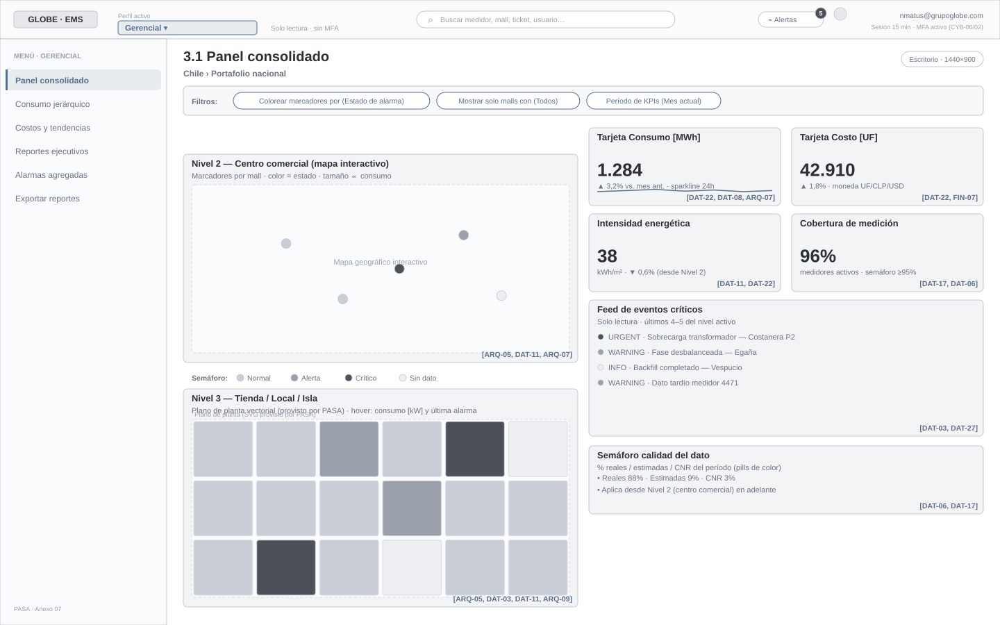
Pantalla de aterrizaje al iniciar sesión. Muestra el estado del portafolio completo en menos de 3 segundos (ARQ-07). La información se filtra progresivamente a través de 3 niveles geográficos interactivos accionados desde el mapa: País → Centro comercial → Tienda/Local. Cada clic refina el nivel de detalle y actualiza los KPIs del panel derecho sin saltar niveles.
Componentes / elementos
| Componente | Descripción | Reqs. PASA |
|---|---|---|
| Nivel 1 — País | País fijo en Chile (operación monopaís por ahora); no hay selector de país. Marcadores circulares por cada mall activo. | ARQ-05, DAT-11, ARQ-07 |
| Nivel 2 — Centro comercial | Mapa con marcador por mall; color = estado (verde normal / amarillo alerta / rojo crítico / gris sin dato), tamaño proporcional al consumo relativo. Click actualiza KPIs. | ARQ-05, DAT-11, DAT-03 |
| Nivel 3 — Tienda / Local / Isla | Al seleccionar un mall y piso se despliega el plano de planta vectorial provisto por PASA; cada tienda/local/isla es un bloque coloreado por estado; hover con nombre, consumo actual [kW] y última alarma. | ARQ-05, DAT-03, DAT-11, ARQ-09 |
| Tarjeta Consumo [MWh] | Consumo total del período en el nivel seleccionado. Variación % vs. mismo período anterior. Mini sparkline de tendencia de las últimas 24 h. | DAT-22, DAT-08, ARQ-07 |
| Tarjeta Costo [UF] | Costo acumulado del período. Variación % vs. período anterior. Moneda seleccionable (UF/CLP/USD) según país del nivel activo. | DAT-22, FIN-07 |
| Tarjeta Intensidad energética | Consumo / superficie arrendada [kWh/m²]. Variación % vs. período anterior. Aplica desde Nivel 2 (mall) en adelante. | DAT-11, DAT-22 |
| Tarjeta Cobertura de medición | % de medidores activos / total esperado. Semáforo: verde ≥95%, amarillo 85–95%, rojo <85%. | DAT-17, DAT-06 |
| Feed de eventos críticos | Lista de los últimos 4–5 eventos del nivel activo: severidad (URGENT/WARNING/INFO), hora, descripción breve, zona afectada. Solo lectura en este perfil. | DAT-03, DAT-27 |
| Semáforo calidad del dato | % lecturas reales / estimadas / CNR del período activo, en pills de color. Aplica desde Nivel 2. | DAT-06, DAT-17 |
| Sistema de colores de estado | Consistente en todos los niveles y perfiles: verde = operación normal; amarillo = WARNING (sobreconsumo leve, calidad degradada, fase desbalanceada); rojo = alarma crítica (sobrecarga, medidor offline >4 h); gris = sin dato. | DAT-06, DAT-03, DAT-27 |
Filtros disponibles
| Filtro | Opciones | Por defecto |
|---|---|---|
| Colorear marcadores por | Estado de alarma / Consumo actual [kW] / Variación consumo % / Cobertura de medición % | Estado de alarma |
| Mostrar solo malls con | Todos / Alarma crítica activa / Alerta warning activa / Sin datos | Todos |
| Período de KPIs | Hoy / Mes actual / Trimestre / Últimos 12 meses / Rango personalizado | Mes actual |
Mapa como único punto de entrada (superior-izquierda)
El gerente abre esta pantalla para responder una sola pregunta: «¿dónde hay un problema en mi portafolio?». Por eso el mapa ocupa el cuadrante de mayor peso visual —arranque del recorrido de lectura en F— y no una columna lateral: la ubicación geográfica del riesgo es el primer dato que busca, y los marcadores de color le permiten localizar el mall crítico sin leer una sola cifra.
Principio: Patrón de lectura en F y jerarquía visual: lo urgente ocupa el punto de entrada.
Retícula 2×2 de tarjetas KPI a la derecha
Consumo, costo, intensidad y cobertura se agrupan pegadas entre sí a la derecha del mapa porque el gerente las lee como un solo bloque de «salud del portafolio», no una por una. Alinearlas a la grilla permite comparar sus variaciones % con un barrido vertical del ojo; dispersarlas obligaría a rastrearlas y rompería la lectura en 3 segundos exigida por ARQ-07.
Principio: Proximidad (Gestalt) y ley de proximidad para agrupar métricas afines.
Semáforo de color en lugar de texto de estado
El estado se codifica primero con color y forma y solo después con texto, porque este perfil escanea decenas de malls en segundos y el color se procesa de forma pre-atenta —más rápido que leer la palabra «crítico»—. Se añade letra y una leyenda fija para no depender únicamente del color y cumplir accesibilidad.
Principio: Codificación pre-atenta del color; regla de no-solo-color (accesibilidad).
Feed de eventos sin botones de acción
El feed se ubica debajo de las tarjetas, como información de contexto de segundo nivel, y se muestra en solo lectura: el gerente no gestiona alarmas —eso pertenece al perfil Operacional—, así que se omiten los botones para no ofrecer una acción que el rol no posee y evitar errores de expectativa.
Principio: Correspondencia entre rol y affordance; el diseño no promete lo que el permiso no permite.
Drill-down progresivo de 3 niveles
La navegación nunca salta niveles (País→Mall→Local): cada clic refina en el mismo lugar y conserva el panel de KPIs a la vista, de modo que el gerente no tiene que recordar dónde estaba. Reducir de 6 a 3 niveles acorta la ruta a la información que este perfil realmente consulta (portafolio y mall), sin obligarlo a atravesar región/ciudad/comuna.
Principio: Reconocer antes que recordar; minimizar la carga en memoria de trabajo.
Barra de filtros única y persistente
Los cuatro filtros globales viven en una sola barra sobre el contenido, mostrando su valor por defecto entre paréntesis, para que el gerente sepa exactamente qué está viendo sin abrir menús y para que el patrón sea idéntico en todas las pantallas del perfil.
Principio: Consistencia entre pantallas y visibilidad del estado del sistema.
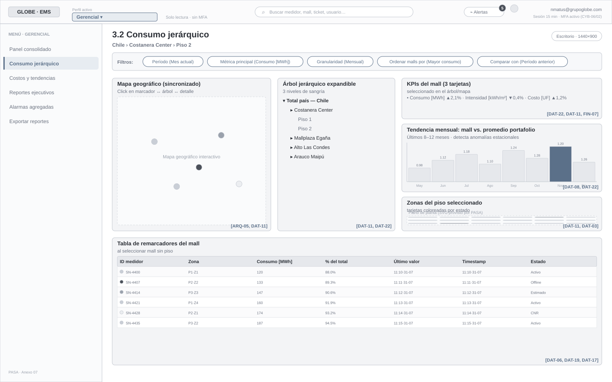
Pantalla de análisis drill-down del consumo. Combina el mapa geográfico (panel izquierdo) con un árbol jerárquico expandible (columna central) y un panel de detalle con KPIs y gráficos (columna derecha). La interacción en cualquiera de los tres paneles sincroniza los otros dos. El árbol tiene 3 niveles: Total país → Mall → Piso/zona.
Componentes / elementos
| Componente | Descripción | Reqs. PASA |
|---|---|---|
| Nivel 0 — Total país | Fila raíz sin sangría. Muestra el total [MWh o métrica seleccionada] del país activo y variación % vs. período anterior. | DAT-22, ARQ-05 |
| Nivel 1 — Mall (▸/▾) | Una fila por mall con punto de color de estado. Consumo [MWh], % del total, variación % (rojo si sube, verde si baja). Click expande y activa el detalle. | DAT-11, DAT-22 |
| Nivel 2 — Piso / zona | Solo visible al expandir un mall (sangría doble). Nombre, consumo [MWh], variación %, punto de color según alarma. Click activa el plano de planta del piso. | DAT-11, ARQ-05 |
| KPIs del mall (3 tarjetas) | Consumo del período [MWh], Intensidad [kWh/m²] y Costo estimado [UF], cada uno con su variación %. | DAT-22, DAT-11, FIN-07 |
| Gráfico de tendencia mensual | Barras del mall vs. barras del promedio del portafolio, últimos 8–12 meses. Permite identificar anomalías estacionales. | DAT-08, DAT-22 |
| Zonas del piso seleccionado | Tarjetas coloreadas por estado para cada tienda/zona del piso activo, con nombre y consumo [MWh]. Coherente con el Nivel 3 del Panel consolidado. | DAT-11, DAT-03 |
| Tabla de remarcadores | Al seleccionar el mall (sin piso): ID medidor, zona, consumo [MWh], % del total, último valor, timestamp y estado (activo/offline/CNR/estimado). | DAT-06, DAT-19, DAT-17 |
Filtros disponibles
| Filtro | Opciones | Por defecto |
|---|---|---|
| Período | Mes actual / Trimestre / Año en curso / Últimos 12 meses / Rango personalizado (hasta 5 años) | Mes actual |
| Métrica principal | Consumo [MWh] / Costo [UF o moneda] / Intensidad [kWh/m²] / Demanda máxima [kW] | Consumo [MWh] |
| Granularidad temporal | Mensual / Semanal | Mensual |
| Ordenar malls por | Mayor consumo / Mayor costo / Mayor variación % / Nombre A-Z | Mayor consumo |
| Mostrar solo malls con | Todos / Alarma crítica / Variación > X% / Sin datos completos | Todos |
| Comparar con | Período anterior / Mismo período año anterior / Promedio del portafolio | Período anterior |
| Moneda de costos | UF / CLP / USD | UF |
Tres paneles sincronizados en una vista
Mapa, árbol y detalle conviven sin pestañas ni modales porque el gerente compara «dónde» (mapa), «cuánto» (árbol) y «por qué» (detalle) en un mismo golpe de vista. Sincronizar los tres al hacer un solo clic elimina la coordinación manual y evita que pierda el hilo del análisis.
Principio: Múltiples vistas coordinadas; reducir el costo de interacción.
Árbol expandible en vez de navegación página-a-página
El árbol se expande in situ (▸/▾) y solo el mall pulsado abre sus pisos; los demás no se mueven. Así el gerente mantiene visible el contexto del portafolio completo mientras profundiza, en lugar de abrir una pantalla nueva y perder la referencia de dónde estaba en la jerarquía.
Principio: Preservar el contexto; revelación progresiva (progressive disclosure).
Resaltado en azul-acento de la fila activa
El único color saturado de la pantalla es el acento sobre la fila seleccionada, que ata visualmente el árbol con lo que muestran el mapa y el detalle. Al reservar el acento para «lo que estás mirando ahora», el resto queda en gris y la atención no se dispersa.
Principio: Un único foco de atención; economía del color.
Barra de comparación como filtro, no como gráfico aparte
«Comparar con» (período anterior / año anterior / promedio del portafolio) es un filtro y no una vista separada porque el gerente casi siempre lee una cifra contra su referencia; incorporarlo al mismo panel evita duplicar pantallas y mantiene la variación % siempre en contexto.
Principio: Comparación en contexto; consistencia con el resto del perfil.
Tabla de remarcadores al pie
El detalle a nivel medidor se coloca al final, en ancho completo y solo cuando se selecciona un mall sin piso: es el dato más granular y el menos frecuente para un gerente, así que ocupa la zona de menor prioridad de lectura pero queda disponible sin cambiar de pantalla.
Principio: Jerarquía por frecuencia de consulta; lo granular al final del recorrido.
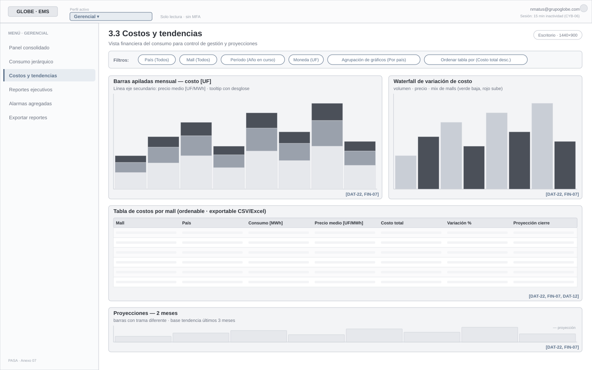
Vista financiera del consumo para control de gestión y proyecciones. Orientada a directivos y al área de finanzas. Combina la evolución mensual de costos, la descomposición de la variación y una tabla exportable con proyección de cierre.
Componentes / elementos
| Componente | Descripción | Reqs. PASA |
|---|---|---|
| Gráfico de barras apiladas mensual | Eje Y: costo [UF o moneda seleccionada]. Barras apiladas por mall (configurable). Línea superpuesta en eje Y secundario: precio medio de la energía [UF/MWh]. Hover con desglose del costo por componente. | DAT-22, FIN-07 |
| Waterfall chart de variación | Descompone la variación de costo total entre el período anterior y el actual en: cambio en volumen, cambio en precio y cambio en mix de malls. Barras verdes para reducción, rojas para incremento. | DAT-22, FIN-07 |
| Tabla de costos por mall | Columnas: mall, consumo [MWh], precio medio [UF/MWh], costo total, variación %, proyección cierre de mes y año. Ordenable por columna. Exportable a CSV/Excel. | DAT-22, FIN-07, DAT-12 |
| Proyecciones | Últimos 2 meses con cifras proyectadas (barras con trama diferente), basadas en la tendencia de los últimos 3 meses. | DAT-22, FIN-07 |
Filtros disponibles
| Filtro | Opciones | Por defecto |
|---|---|---|
| Mall | Multi-selección con buscador | Todos |
| Período | Mes actual / Trimestre / Año en curso / Últimos 12 meses / Rango personalizado | Año en curso |
| Moneda | UF / CLP / USD (conversión al tipo de cambio del último día disponible) | UF |
| Agrupación de gráficos | Por mall / Por tipología de mall | Por mall |
| Ordenar tabla por | Cualquier columna (asc/desc) | Costo total desc. |
| Mostrar solo malls con variación | Todos / >5% / >10% / >20% (campo numérico) | Todos |
Barras apiladas como pieza principal a la izquierda
La evolución mensual del costo es lo que el área de control de gestión revisa primero, así que ocupa el mayor bloque y el punto de entrada de lectura. Apilar por mall en una sola barra por mes permite ver a la vez el total y su composición sin cambiar de gráfico.
Principio: Jerarquía visual por frecuencia de uso; densidad informativa controlada.
Waterfall junto a las barras, no en otra pestaña
El waterfall responde la pregunta que surge inmediatamente al ver subir el costo: «¿fue volumen, precio o mix?». Colocarlo al lado —no en otra pantalla— permite leer el «cuánto» y el «por qué» en el mismo movimiento ocular, respetando el sentido de lectura izquierda→derecha.
Principio: Proximidad causa-efecto; patrón de lectura en Z.
Verde/rojo con dirección explícita en el waterfall
En finanzas el color por sí solo es ambiguo (¿rojo es malo o es gasto?), por eso cada barra lleva además el signo de la variación; el color acelera el escaneo pero el texto elimina la interpretación errónea de un ahorro como sobrecosto.
Principio: Redundancia de codificación; prevención de error de interpretación.
Tabla exportable al pie, en ancho completo
La tabla es el artefacto que finanzas se lleva a su propio análisis, por eso está al final (cierre del recorrido), abarca todo el ancho para mostrar todas las columnas sin scroll horizontal, y expone el CSV/Excel donde se espera terminar la tarea.
Principio: Coincidencia con el flujo de trabajo real del usuario; visibilidad de la acción de salida.
Proyección diferenciada por trama, no por color nuevo
Las columnas proyectadas usan una trama distinta en vez de un color adicional para no introducir una cuarta categoría cromática que compita con el semáforo; el gerente distingue «dato real» de «estimación» por textura, manteniendo la paleta sobria.
Principio: Distinción por forma antes que por color; economía de la paleta.
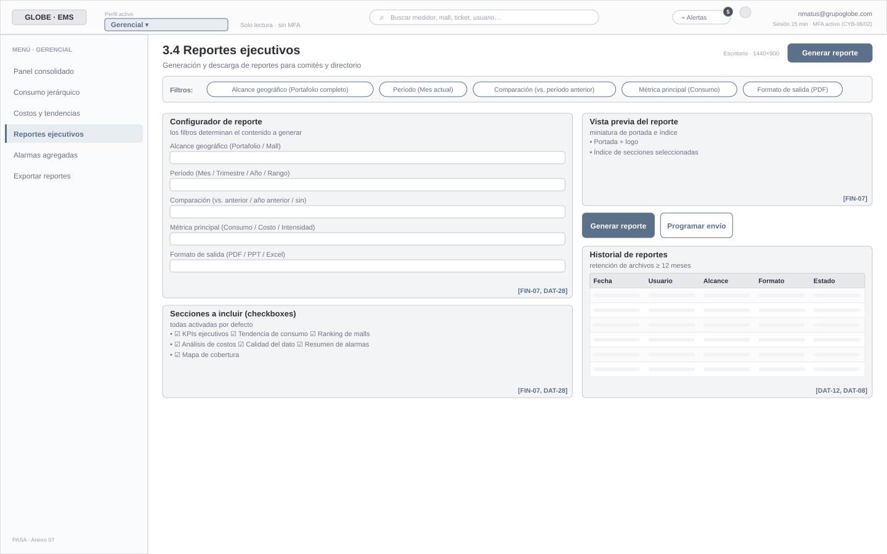
Generación y descarga de reportes para comités y directorio. Permite configurar el contenido (alcance, período, comparación, secciones y formato) antes de generar, y conserva un historial descargable con retención mínima de 12 meses.
Componentes / elementos
| Componente | Descripción | Reqs. PASA |
|---|---|---|
| Configurador de reporte | Filtros que determinan el contenido: alcance geográfico, período, comparación, métrica principal, secciones a incluir y formato de salida (PDF con gráficos / PPT editable / Excel plano). | FIN-07, DAT-28, DAT-08 |
| Secciones a incluir | Checkboxes individuales: KPIs ejecutivos, tendencia de consumo, ranking de malls, análisis de costos, calidad del dato, resumen de alarmas del período y mapa de cobertura. Todas activadas por defecto. | FIN-07, DAT-28 |
| Tabla de historial | Fecha de generación, usuario, alcance, período cubierto, formato, estado (generando/listo/error) y link de descarga. Retención de archivos: 12 meses mínimo. | DAT-12, DAT-08 |
Filtros disponibles
| Filtro | Opciones | Por defecto |
|---|---|---|
| Alcance geográfico | Portafolio completo / Mall específico (multi-selección con buscador) | Portafolio completo |
| Período | Mes / Trimestre / Año / Rango personalizado (hasta 5 años) | Mes actual |
| Comparación | vs. período anterior / vs. mismo período año anterior / Sin comparación | vs. período anterior |
| Secciones a incluir | KPIs / Tendencia / Ranking / Costos / Calidad / Alarmas / Mapa de cobertura | Todas activadas |
| Métrica principal del reporte | Consumo / Costo / Intensidad | Consumo |
| Formato de salida | PDF (con gráficos) / PPT (slides editables) / Excel (tablas planas) |
Configurador a la izquierda, resultado a la derecha
El flujo es «configuro → previsualizo → genero», por eso el formulario ocupa la columna izquierda (primer paso, sentido de lectura) y la vista previa más el historial la derecha (resultado). El gerente avanza de izquierda a derecha sin retroceder.
Principio: Flujo secuencial alineado al recorrido de lectura; correspondencia con el modelo mental de la tarea.
Secciones como checkboxes con todo activado
Las secciones vienen todas marcadas porque el caso más común es el reporte completo; el gerente resta lo que no quiere en vez de construir desde cero. Es una configuración por defecto inteligente que minimiza clics para el 80% de los casos.
Principio: Valores por defecto inteligentes; minimizar el esfuerzo del caso frecuente.
Vista previa antes del botón Generar
La miniatura e índice se muestran antes de generar para que el gerente confirme que el reporte es el correcto sin gastar el tiempo de render ni descargar un PDF equivocado; es feedback anticipado sobre una acción costosa.
Principio: Visibilidad del estado del sistema; prevención de errores antes de una acción cara.
Botón «Generar» con estilo de acento (CTA primaria)
«Generar reporte» es el único botón sólido en acento de la pantalla; «Programar envío» queda como acción secundaria en contorno. Diferenciar la acción principal por peso visual evita que el gerente dude cuál es el paso que cierra la tarea.
Principio: Jerarquía de acciones (primaria vs. secundaria); ley de Fitts en el objetivo principal.
Historial con estado y link de descarga
El historial expone el estado (generando/listo/error) y el link en la misma fila para que el gerente sepa si un reporte ya está disponible sin reintentar; el estado visible reduce la incertidumbre en generaciones que tardan.
Principio: Feedback de estado de procesos asíncronos.
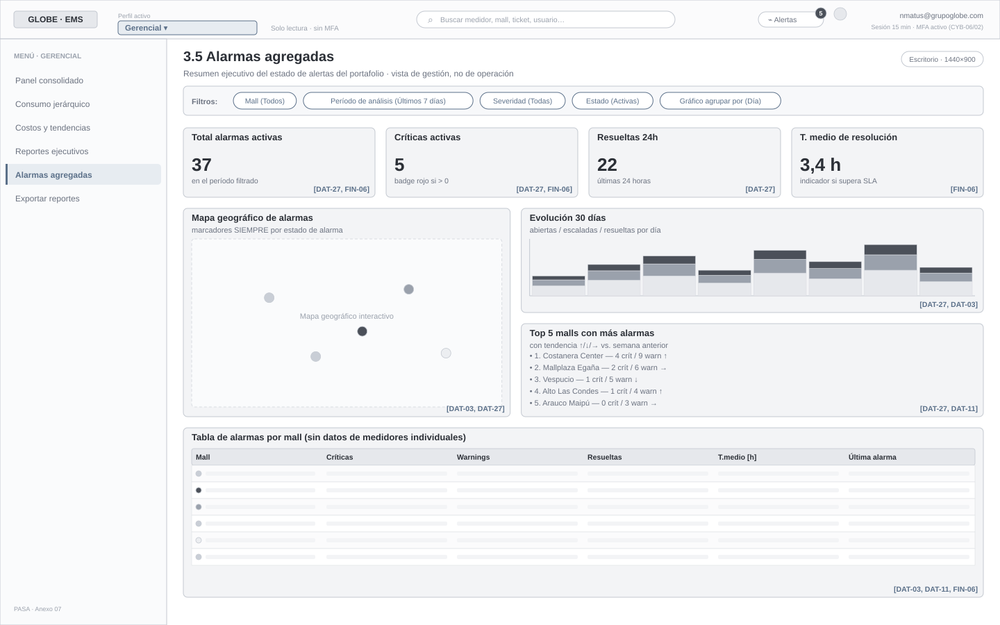
Resumen ejecutivo del estado de alertas del portafolio, sin detalle técnico de medidores individuales. Es una vista de gestión (no de operación): el gerente ve magnitud, tendencia y concentración de alarmas, pero no las gestiona.
Componentes / elementos
| Componente | Descripción | Reqs. PASA |
|---|---|---|
| Tarjetas de cabecera | Total alarmas activas / Críticas activas (badge rojo si >0) / Resueltas en últimas 24 h / Tiempo medio de resolución del período [h] con indicador si supera el SLA. | DAT-27, FIN-06 |
| Mapa geográfico de alarmas | Misma lógica del Panel consolidado, pero los marcadores se colorean siempre por estado de alarma (ignora la métrica de otras pantallas). Click: panel lateral con resumen del mall. | DAT-03, DAT-27 |
| Gráfico de evolución — 30 días | Barras apiladas por día: abiertas (rojo) / escaladas (naranja) / resueltas (verde). Hover con conteo exacto por severidad. | DAT-27, DAT-03 |
| Top 5 malls con más alarmas | Nombre, país, nº críticas, nº warnings y tendencia (↑/↓/→) vs. semana anterior. | DAT-27, DAT-11 |
| Tabla de alarmas por mall | Mall, críticas activas, warnings activas, resueltas en período, tiempo medio de resolución [h], última alarma (hora y descripción breve). Sin datos de medidores individuales. | DAT-03, DAT-11, FIN-06 |
Filtros disponibles
| Filtro | Opciones | Por defecto |
|---|---|---|
| Mall | Multi-selección con buscador | Todos |
| Período de análisis | Hoy / Últimas 24h / Últimos 7 días / Últimos 30 días / Rango personalizado | Últimos 7 días |
| Severidad | Todas / Solo críticas / Críticas y altas | Todas |
| Estado de la alarma | Activas / Resueltas / Todas | Activas |
| Gráfico — agrupar por | Día / Semana / Mall | Día |
Cuatro tarjetas-resumen en la cabecera
El gerente necesita una respuesta binaria al entrar: «¿está mi portafolio bajo control?». Las cuatro cifras clave —con la de críticas destacada por un badge— ocupan la primera línea de lectura para dar esa respuesta antes de que el ojo baje a los gráficos.
Principio: Jerarquía visual en F; la conclusión antes que la evidencia.
Mapa siempre coloreado por estado de alarma
A diferencia de otras pantallas donde el color del marcador es configurable, aquí se fija en «estado de alarma» para eliminar ambigüedad: en la pantalla de alarmas, rojo siempre significa alarma. Quitar esa opción evita que el gerente malinterprete un mapa configurado para otra métrica.
Principio: Consistencia de significado del color; prevención de error por configuración.
Evolución 30 días y Top 5 apilados a la derecha
Tendencia (¿mejora o empeora?) y concentración (¿qué malls?) responden preguntas de segundo nivel y se agrupan a la derecha, en bloque, para que el gerente pase de «cuántas» a «hacia dónde van» y «dónde se concentran» de arriba hacia abajo.
Principio: Agrupación por afinidad funcional; secuencia de preguntas del usuario.
Tabla sin medidores individuales
La tabla se detiene deliberadamente a nivel mall: exponer medidores individuales sería ruido para un gerente y competencia del perfil Operacional. Limitar la granularidad protege el foco ejecutivo y respeta la separación de responsabilidades entre perfiles.
Principio: Minimización de información según el rol; separación de responsabilidades.
Ausencia de botones de gestión de alarma
No hay «Asignar» ni «Cerrar»: esta vista informa, no opera. La ausencia de affordances de acción comunica al gerente que su rol aquí es de supervisión, evitando que intente gestionar algo que corresponde a otro perfil.
Principio: Affordance acorde al permiso; claridad del rol.
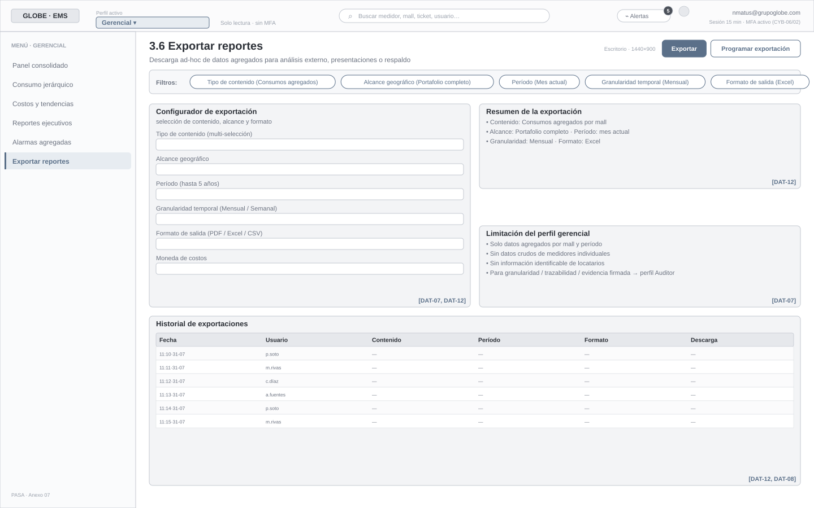
Descarga ad-hoc de datos agregados para análisis externo, presentaciones o respaldo. Permite elegir tipo de contenido, alcance, período, granularidad y formato. Los exports del perfil gerencial contienen únicamente datos agregados por mall y período.
Componentes / elementos
| Componente | Descripción | Reqs. PASA |
|---|---|---|
| Configurador del exportador | Tipo de contenido (consumos agregados / costos y facturación / calidad del dato / cobertura de medición / resumen de alarmas), alcance geográfico, período, granularidad temporal, formato de salida y moneda. | DAT-07, DAT-12 |
| Historial de exportaciones | Registro de exportaciones realizadas con fecha, usuario, contenido, período, formato y link de descarga. | DAT-12, DAT-08 |
| Limitación del perfil gerencial | Los exports incluyen solo datos agregados por mall y período; no incluyen datos crudos de medidores ni información identificable de locatarios. Para mayor granularidad, trazabilidad o evidencia firmada se requiere el perfil Auditor. | DAT-07 |
Filtros disponibles
| Filtro | Opciones | Por defecto |
|---|---|---|
| Tipo de contenido | Consumos agregados por mall / Costos y facturación / Calidad del dato / Cobertura de medición / Resumen de alarmas (multi-selección) | Consumos agregados |
| Alcance geográfico | Portafolio completo / Mall específico (multi-selección con buscador) | Portafolio completo |
| Período | Mes actual / Trimestre / Año en curso / Rango personalizado (hasta 5 años) | Mes actual |
| Granularidad temporal | Mensual / Semanal (datos diarios no disponibles en perfil gerencial) | Mensual |
| Formato de salida | PDF ejecutivo / Excel / CSV | Excel |
| Moneda de costos | UF / CLP / USD | UF |
Formulario a la izquierda con resumen espejo a la derecha
Mientras el gerente arma la exportación en el formulario, el panel «Resumen» refleja en lenguaje natural lo que va a descargar. Ese eco reduce el error de exportar un alcance o período equivocado sin tener que releer cada control.
Principio: Feedback inmediato del estado; reconocer antes que recordar.
Aviso de limitación siempre visible
La restricción de granularidad no se esconde en un tooltip: se muestra como bloque fijo para que el gerente entienda por qué no ve datos crudos y sepa que la ruta correcta es el perfil Auditor. Explicar el límite en el sitio evita frustración y tickets de soporte.
Principio: Prevención de errores por expectativa; ayuda en contexto.
Excel como formato por defecto
El valor por defecto es Excel porque es el destino más frecuente de un gerente que arma presentaciones o análisis; ofrecer el formato esperado sin obligar a elegir acelera la tarea del caso común.
Principio: Valor por defecto inteligente orientado al caso más frecuente.
Historial de exportaciones al pie
El historial en ancho completo al final permite reutilizar o volver a descargar una extracción previa sin reconfigurarla; es memoria del sistema que ahorra repetir trabajo, ubicada al cierre del recorrido por ser de consulta ocasional.
Principio: El sistema recuerda por el usuario; jerarquía por frecuencia.
Botón «Exportar» como CTA primaria
La acción de salida se distingue en acento sólido frente a «Programar», de contorno, para que el clic que completa la tarea sea el objetivo visual más grande y evidente de la columna derecha.
Principio: Ley de Fitts; jerarquía primaria/secundaria de acciones.
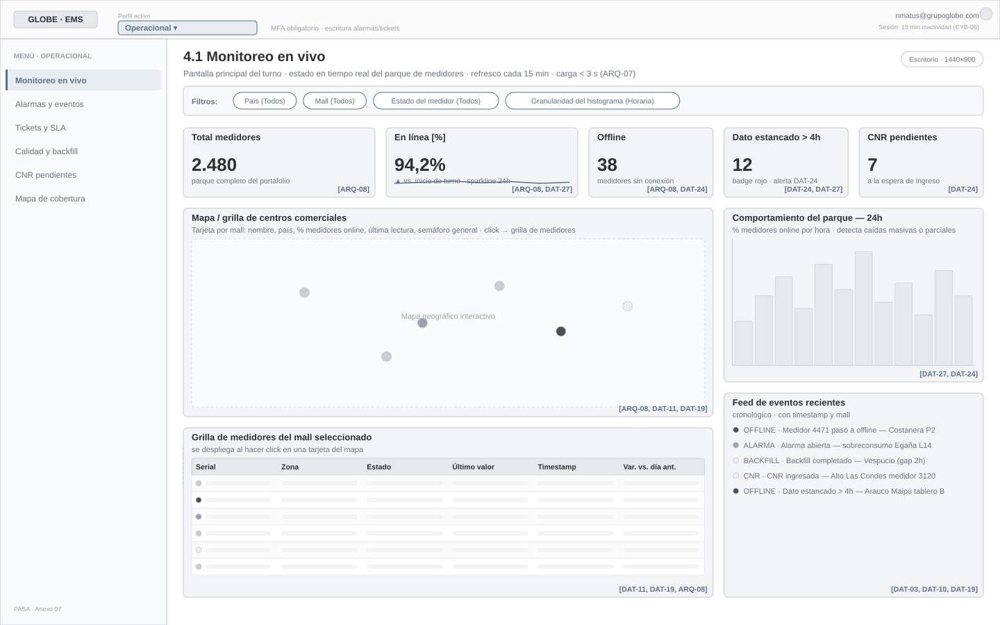
Pantalla principal del turno del perfil Operacional. Muestra el estado en tiempo real del parque completo de medidores, actualizado cada 15 minutos, con carga en menos de 3 segundos (ARQ-07). Combina indicadores de cabecera, un mapa/grilla de centros comerciales que abre la grilla de medidores al hacer click, un histograma de comportamiento del parque en las últimas 24 h y un feed cronológico de eventos recientes.
Componentes / elementos
| Componente | Descripción | Reqs. PASA |
|---|---|---|
| Indicadores de cabecera (refresco 15 min) | Total medidores / En línea [%] / Offline / Con dato estancado > 4h (badge rojo, alerta automática DAT-24) / CNR pendientes. | DAT-24, DAT-27, ARQ-08 |
| Mapa / grilla de centros comerciales | Tarjeta por mall: nombre, % medidores online, última lectura y semáforo general. Click en la tarjeta despliega la grilla de medidores del mall: serial, zona, estado, último valor, timestamp y variación vs. día anterior. | ARQ-08, DAT-11, DAT-19 |
| Histograma de comportamiento del parque | % de medidores online por hora en las últimas 24 h. Permite detectar caídas masivas o parciales y correlacionarlas con eventos externos. | DAT-27, DAT-24 |
| Feed de eventos recientes | Lista cronológica: medidor pasó a offline, alarma abierta, backfill completado, CNR ingresada. Con timestamp y mall. | DAT-03, DAT-10, DAT-19 |
Filtros disponibles
| Filtro | Opciones | Por defecto |
|---|---|---|
| Mall | Selector con buscador | Todos |
| Estado del medidor | Todos / Online / Offline / Dato estancado > 4h / CNR pendiente | Todos |
| Granularidad del histograma | Horaria / Por turno (8h) | Horaria |
Cinco indicadores de cabecera en una sola línea
Al recibir el turno, el operador escanea la primera línea para saber en segundos cuánto del parque está en riesgo: online, offline, estancado y CNR forman su check de entrada. Se codifica «dato estancado > 4h» con un badge rojo porque es el disparador de la alerta DAT-24 y no debe perderse entre cifras neutras.
Principio: Visibilidad del estado del sistema; realce del dato accionable por color.
Mapa/grilla como bloque de mayor peso, arriba-izquierda
El mapa de malls ocupa el cuadrante de arranque de lectura porque la primera pregunta del turno es «¿qué mall está caído?». El click abre la grilla de medidores en el mismo lugar, sin cambiar de pantalla, para que el operador profundice al detalle sin perder la vista global del parque.
Principio: Jerarquía visual y revelación progresiva; conservar el contexto del monitoreo.
Histograma 24h junto al mapa
Poner el histograma de % online por hora al lado del mapa permite distinguir de un vistazo una caída puntual de una masiva: si la curva se hunde a una hora concreta, el operador correlaciona con un evento externo en vez de abrir medidor por medidor.
Principio: Reconocimiento de patrones sobre inspección manual; datos afines agrupados.
Feed cronológico en columna lateral
El feed corre en tiempo real a la derecha como bitácora viva del turno; cada línea lleva timestamp y mall para que el operador reconstruya la secuencia de fallas sin cruzar reportes. Los eventos críticos (offline, estancado) usan color rojo para saltar por delante de los informativos.
Principio: Feedback continuo del sistema; escaneabilidad por severidad.
Filtros de estado en la barra superior
Filtrar por «Offline» o «Dato estancado > 4h» desde la barra reduce el parque a solo lo que exige acción, evitando que el operador rastree manualmente entre 2.480 medidores. La granularidad horaria/turno del histograma vive en la misma barra para no fragmentar los controles.
Principio: Reducción del espacio de búsqueda; consistencia de ubicación de controles.
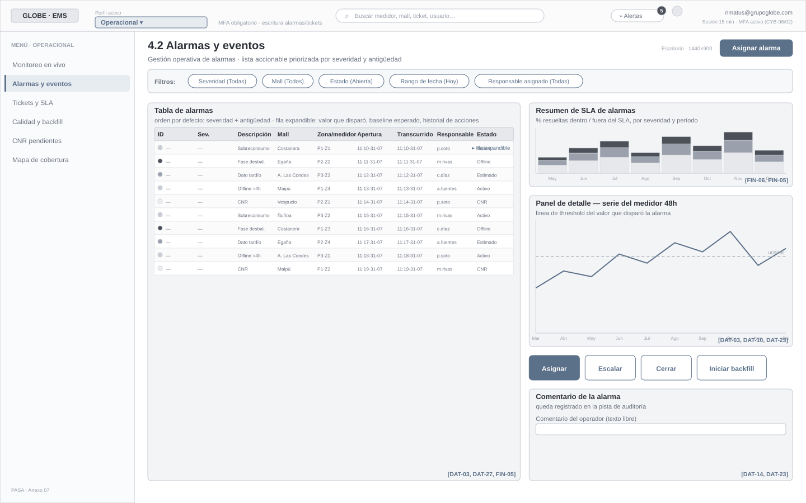
Gestión operativa de alarmas. Presenta una lista accionable ordenada por severidad y antigüedad, un panel de detalle con la serie temporal del medidor y sus acciones (asignar, escalar, cerrar, iniciar backfill), y un resumen del cumplimiento de SLA. Todo comentario queda en la pista de auditoría (DAT-14).
Componentes / elementos
| Componente | Descripción | Reqs. PASA |
|---|---|---|
| Tabla de alarmas | Columnas: ID, severidad (badge), descripción, mall, zona/medidor, fecha de apertura, tiempo transcurrido, responsable asignado y estado. Ordenada por severidad + antigüedad por defecto. Fila expandible: valor que disparó la alarma, baseline esperado e historial de acciones. | DAT-03, DAT-27, FIN-05 |
| Panel de detalle de alarma | Gráfico de serie temporal del medidor en las últimas 48 h con línea de threshold. Botones: Asignar / Escalar / Cerrar / Iniciar backfill automático. Campo de comentario que queda en la pista de auditoría. | DAT-03, DAT-10, DAT-14, DAT-23 |
| Resumen de SLA de alarmas | % resueltas dentro del SLA / fuera del SLA, desglosado por severidad y período. | FIN-06, FIN-05 |
Filtros disponibles
| Filtro | Opciones | Por defecto |
|---|---|---|
| Severidad | Crítica / Alta / Media / Baja (multi-selección) | Todas |
| Mall | Multi-selección con buscador | Todos |
| Estado | Abierta / Asignada / Escalada / Resuelta / Todas | Abierta |
| Rango de fecha | Date picker inicio–fin | Hoy |
| Responsable asignado | Mías / Todas / Por técnico (selector) | Todas |
Tabla ordenada por severidad + antigüedad por defecto
La lista llega ya priorizada: crítico y más antiguo arriba, para que el operador ataque en el orden correcto sin ordenar manualmente cada vez que entra. El punto de estado en la primera columna transmite la severidad de forma pre-atenta antes de leer la descripción.
Principio: Orden por prioridad como valor por defecto; codificación pre-atenta del riesgo.
Fila expandible en lugar de abrir otra pantalla
El valor que disparó la alarma, su baseline y el historial de acciones se despliegan dentro de la misma fila para que el operador confirme el diagnóstico sin abandonar la lista ni perder su posición entre decenas de alarmas del turno.
Principio: Revelación progresiva; preservar el contexto de la lista de trabajo.
Panel de detalle con serie 48h y línea de threshold
La serie temporal muestra explícitamente la línea de umbral que gatilló la alarma, de modo que el operador vea de un golpe si fue un pico aislado o una tendencia sostenida antes de decidir escalar o cerrar. La evidencia gráfica precede a la acción.
Principio: Evidencia visible antes de la decisión; correspondencia entre dato y acción.
Botonera de acción fija (Asignar / Escalar / Cerrar / Iniciar backfill)
Las cuatro acciones operativas viven juntas y siempre visibles bajo el gráfico, para que gestionar la alarma sea un solo movimiento sin buscar menús; agruparlas reduce el tiempo de respuesta en un turno de uso intensivo. «Iniciar backfill» queda en la misma fila porque suele seguir al cierre.
Principio: Agrupación por afinidad de acción; economía de gestos (ley de Fitts).
Campo de comentario ligado a la pista de auditoría
El comentario se muestra pegado a las acciones y advierte que queda en la auditoría (DAT-14): así el operador sabe que lo que escribe es trazable e inmutable, lo que fomenta notas precisas y desalienta texto informal.
Principio: Transparencia de las consecuencias; el diseño comunica la trazabilidad.
Resumen de SLA como cabecera del panel derecho
El bloque de % dentro/fuera de SLA por severidad se coloca arriba a la derecha como marco de contexto: recuerda al operador cuánto margen le queda antes de incumplir FIN-06 mientras trabaja cada alarma individual.
Principio: Mantener la meta visible durante la tarea; contexto de rendimiento persistente.
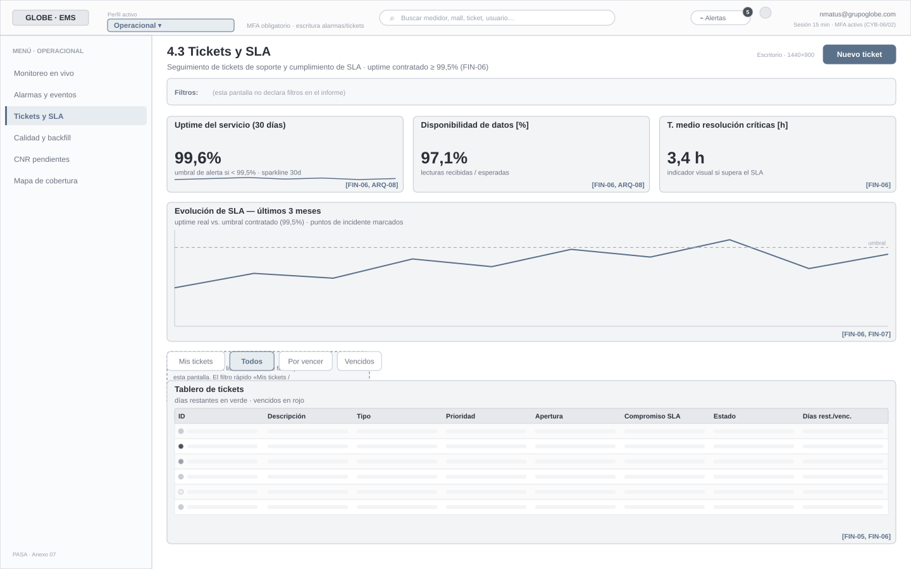
Seguimiento de tickets de soporte y cumplimiento de SLA para el perfil Operacional. Combina un semáforo permanente de SLA en la cabecera, un gráfico de evolución de uptime contra el umbral contratado del 99,5% y un tablero de tickets con estado y días restantes o vencidos. Cubre los niveles de soporte N1-N2-N3 (FIN-05).
Componentes / elementos
| Componente | Descripción | Reqs. PASA |
|---|---|---|
| Semáforo de SLA (cabecera permanente) | Uptime del servicio (30 días) / Disponibilidad de datos [%] / Tiempo medio de resolución de alarmas críticas [h], cada uno con umbral de alerta visual. | FIN-06, ARQ-08 |
| Tablero de tickets | ID, descripción, tipo (alarma / CNR / solicitud), prioridad, fecha de apertura, fecha de compromiso SLA, estado y días restantes o vencidos. Filtro rápido: mis tickets / todos / por vencer / vencidos. | FIN-05, FIN-06 |
| Gráfico de evolución de SLA | Últimos 3 meses: línea de uptime real vs. umbral contratado (99,5%). Puntos de incidente marcados sobre la línea. | FIN-06, FIN-07 |
Semáforo de SLA como cabecera permanente
Las tres métricas de SLA encabezan la pantalla y no se ocultan al hacer scroll porque son el marcador contra el que se mide todo el turno: el operador debe saber en todo momento si el uptime sigue por encima del 99,5% comprometido antes de priorizar un ticket. El umbral se marca en el propio indicador para que la lectura sea de aprobado/reprobado, no un número aislado.
Principio: Persistencia del indicador clave; comparación contra referencia en el propio dato.
Gráfico de evolución sobre la tabla
La línea de uptime vs. umbral se ubica entre el semáforo y el tablero para que el operador entienda la tendencia antes de bajar al detalle: los puntos de incidente marcados enlazan visualmente una caída del gráfico con los tickets que la explican debajo.
Principio: De lo general a lo particular; relación causa-efecto en el recorrido de lectura.
Filtro rápido como pestañas, no como dropdown
«Mis tickets / Todos / Por vencer / Vencidos» se ofrece como pestañas siempre visibles porque son las vistas que el operador alterna decenas de veces por turno; un solo clic cambia el foco sin abrir un menú, y «Por vencer» queda a la vista como recordatorio de urgencia.
Principio: Acceso de un clic a estados frecuentes; visibilidad de las opciones de filtrado.
Columna de días restantes/vencidos con color
La última columna traduce la fecha de compromiso a días restantes o vencidos y los pinta verde/rojo, evitando que el operador calcule mentalmente el margen de SLA fecha por fecha; el rojo empuja los vencidos al primer plano de atención.
Principio: Reducir la carga cognitiva de cálculo; realce del incumplimiento.
Ausencia de barra de filtros global
Esta pantalla no lleva barra de filtros superior porque el filtrado relevante (por estado del ticket) ya vive en las pestañas y el alcance temporal está fijado por el SLA de 30/90 días; añadir filtros globales duplicaría controles y confundiría el modelo mental respecto a las otras pantallas del perfil.
Principio: Evitar controles redundantes; simplicidad sobre completitud innecesaria.
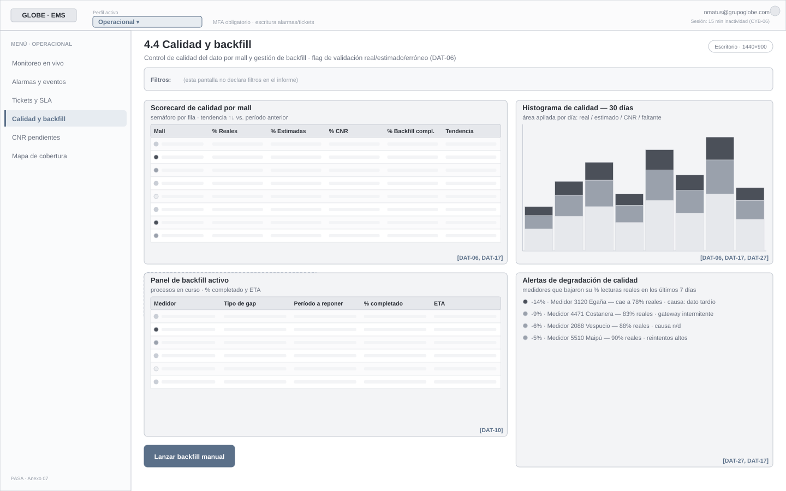
Control de calidad del dato por mall y gestión de backfill. Reúne un scorecard de calidad por mall con semáforo por fila, un histograma de composición de la calidad en 30 días, el panel de procesos de backfill en curso con opción de lanzarlos manualmente y las alertas de degradación de medidores que empeoraron en la última semana.
Componentes / elementos
| Componente | Descripción | Reqs. PASA |
|---|---|---|
| Scorecard de calidad por mall | Tabla: mall, % lecturas reales, % estimadas, % CNR, % backfill completado y tendencia (↑↓) vs. período anterior. Semáforo por fila. | DAT-06, DAT-17 |
| Panel de backfill activo | Lista de procesos en curso: medidor, tipo de gap, período a reponer, % completado y ETA. Botón para lanzar backfill manual. | DAT-10 |
| Histograma de calidad — 30 días | Área apilada por día: real / estimado / CNR / faltante. Los días problemáticos quedan visibles de un vistazo. | DAT-06, DAT-17, DAT-27 |
| Alertas de degradación de calidad | Medidores que bajaron su % de lecturas reales en los últimos 7 días. Lista con delta y causa si está disponible. | DAT-27, DAT-17 |
Scorecard por mall como bloque principal a la izquierda
La tabla de calidad por mall ocupa el punto de entrada porque responde la pregunta de rutina del turno —«¿qué mall tiene peor calidad de dato hoy?»—. El semáforo por fila permite barrer verticalmente y detener el ojo solo en las filas ámbar/rojas, sin leer cada porcentaje.
Principio: Escaneo vertical guiado por color; jerarquía por frecuencia de consulta.
Histograma de 30 días con composición apilada
Apilar real/estimado/CNR/faltante por día deja ver de inmediato los días problemáticos y si la degradación es puntual o sostenida; el operador distingue un incidente de un día contra un deterioro estructural sin abrir series individuales.
Principio: Comparación de composición a lo largo del tiempo; densidad informativa legible.
Panel de backfill con acción de lanzamiento adjunta
Los procesos de backfill en curso muestran % completado y ETA en tabla, y el botón «Lanzar backfill manual» queda justo debajo para que el operador dispare la reposición del gap que acaba de identificar sin cambiar de módulo. Ver el ETA evita relanzar procesos ya en marcha.
Principio: Proximidad entre información y acción; prevención de acciones duplicadas.
Alertas de degradación como lista con delta y causa
Los medidores que empeoraron en 7 días se listan con su caída porcentual y la causa cuando existe, ordenados por magnitud del deterioro; así el operador prioriza la intervención por impacto real y no por orden alfabético o de mall.
Principio: Priorización por magnitud del cambio; información diagnóstica en contexto.
Coherencia de la codificación real/estimado/CNR
El mismo vocabulario de calidad (real / estimado / CNR / faltante) se usa en el scorecard, el histograma y las alertas, de modo que el operador no reinterpreta categorías al pasar de un bloque a otro dentro de la misma pantalla.
Principio: Consistencia terminológica y de codificación entre componentes.
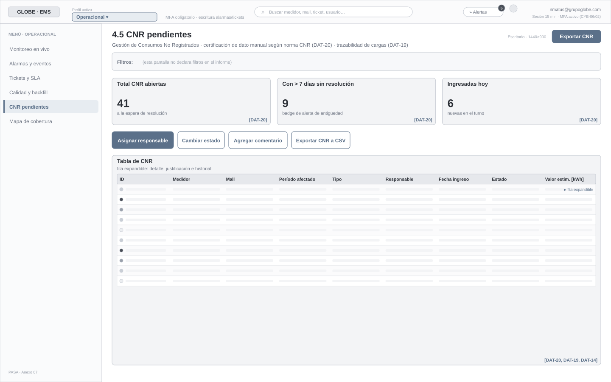
Gestión de los Consumos No Registrados (CNR) pendientes. Muestra indicadores de cabecera sobre el volumen y antigüedad de las CNR abiertas, una tabla accionable con fila expandible por CNR y una barra de acciones para asignar, cambiar estado, comentar o exportar las CNR seleccionadas. Toda operación es trazable (DAT-19, DAT-14).
Componentes / elementos
| Componente | Descripción | Reqs. PASA |
|---|---|---|
| Indicadores de cabecera | Total CNR abiertas / Con > 7 días sin resolución / Ingresadas hoy. | DAT-20 |
| Tabla de CNR | ID, medidor, mall, período afectado, tipo (manual / automático), responsable, fecha de ingreso, estado (pendiente / en revisión / aprobada / rechazada) y valor estimado [kWh]. Fila expandible con detalle, justificación e historial. | DAT-20, DAT-19, DAT-14 |
| Acciones disponibles | Asignar responsable / Cambiar estado / Agregar comentario / Exportar CNR seleccionadas a CSV. | DAT-20, DAT-12 |
Tres indicadores de cabecera centrados en la antigüedad
Las tarjetas priorizan el conteo de CNR con más de 7 días sin resolución porque la antigüedad es el criterio operativo de riesgo; destacarla junto al total y las del día le dice al operador de inmediato si el backlog está envejeciendo antes de entrar a la tabla.
Principio: Visibilidad del indicador crítico; jerarquía por urgencia operativa.
Barra de acciones sobre la tabla, operando sobre la selección
Las cuatro acciones se colocan encima de la tabla para que el flujo natural sea seleccionar filas y actuar sobre ellas en lote; agrupar «Asignar / Cambiar estado / Comentar / Exportar» evita que el operador repita la misma operación CNR por CNR en un backlog grande.
Principio: Acción por lotes sobre selección; economía de interacción.
Fila expandible con justificación e historial
El detalle, la justificación y el historial de cada CNR se abren dentro de la fila porque el operador necesita verificar la evidencia antes de aprobar o rechazar, sin perder de vista el resto del backlog ni abrir una ventana nueva por cada caso.
Principio: Revelación progresiva; verificación en contexto antes de decidir.
Estado como columna con punto de color
El estado (pendiente / en revisión / aprobada / rechazada) se codifica con el punto de estado de la primera columna, permitiendo separar visualmente lo que espera acción de lo ya resuelto durante el barrido de la tabla.
Principio: Codificación de estado pre-atenta; separar lo accionable de lo cerrado.
Exportación a CSV integrada en la misma barra
«Exportar CNR a CSV» convive con las acciones de gestión porque forma parte del mismo flujo (traspasar CNR a certificación o respaldo); tenerlo a mano evita que el operador salga a otra pantalla para documentar lo que acaba de revisar.
Principio: Continuidad del flujo de trabajo; herramientas donde ocurre la tarea.
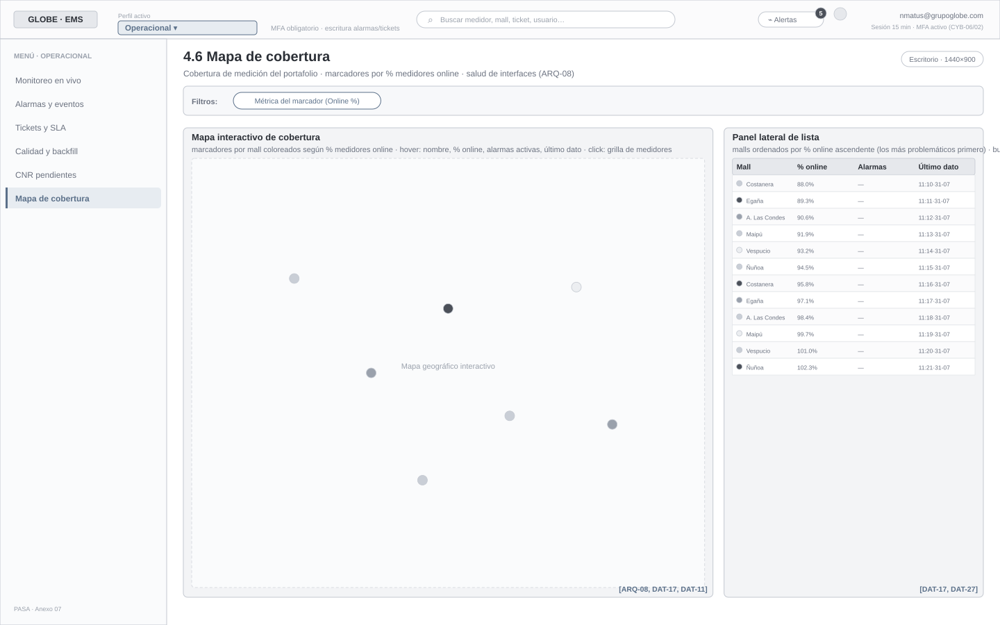
Vista de cobertura de medición del portafolio para el perfil Operacional. Un mapa interactivo colorea cada mall según su % de medidores online y, al hacer click, abre la grilla de medidores del mall; un panel lateral lista los malls ordenados de peor a mejor cobertura con buscador. El selector de métrica del marcador permite recolorear el mapa por alarmas, última lectura o calidad.
Componentes / elementos
| Componente | Descripción | Reqs. PASA |
|---|---|---|
| Mapa interactivo | Marcadores por mall coloreados según % de medidores online. Hover: popup con nombre, % online, alarmas activas y último dato. Click: grilla de medidores del mall. | ARQ-08, DAT-17, DAT-11 |
| Panel lateral de lista | Malls ordenados por % online ascendente (los más problemáticos primero). Buscador por nombre. | DAT-17, DAT-27 |
| Selector de métrica del marcador | Online % / Alarmas activas / Última lectura / Calidad del dato. Recolorea los marcadores del mapa según la métrica elegida. | DAT-17, DAT-06 |
Filtros disponibles
| Filtro | Opciones | Por defecto |
|---|---|---|
| Métrica del marcador | Online % / Alarmas activas / Última lectura / Calidad del dato | Online % |
Mapa como bloque dominante con lista pareada
El mapa ocupa dos tercios del ancho porque la cobertura es intrínsecamente geográfica: el operador localiza visualmente los focos rojos de un vistazo. La lista lateral acompaña como índice navegable para quienes prefieren buscar por nombre en vez de rastrear en el mapa.
Principio: Vistas coordinadas mapa-lista; dos rutas al mismo dato.
Lista ordenada por % online ascendente
El panel lateral pone arriba los malls con peor cobertura porque son los que exigen acción; el operador lee de arriba hacia abajo su cola de trabajo sin ordenar la tabla, y el buscador le permite saltar a un mall concreto cuando llega un reporte específico.
Principio: Los peores primero; el orden por defecto refleja la prioridad de acción.
Selector de métrica del marcador en la barra superior
Recolorear el mapa por online %, alarmas, última lectura o calidad desde un único selector permite responder distintas preguntas sobre el mismo mapa sin cambiar de pantalla; mantenerlo en la barra deja claro qué significa el color en cada momento.
Principio: Reutilización de la misma vista con codificación conmutable; claridad del significado del color.
Hover con popup de resumen antes del click
El popup de hover (nombre, % online, alarmas, último dato) entrega el resumen del mall sin comprometer el click, de modo que el operador descarta o confirma un mall antes de abrir su grilla de medidores completa.
Principio: Previsualización de bajo costo antes de la navegación; feedback anticipado.
Continuidad con la grilla de medidores de Monitoreo en vivo
El click en un marcador abre la misma grilla de medidores que en Monitoreo en vivo, reutilizando un patrón que el operador ya conoce; no aprende una interacción nueva para llegar al detalle desde el mapa de cobertura.
Principio: Consistencia de interacción entre pantallas del perfil; transferencia de aprendizaje.
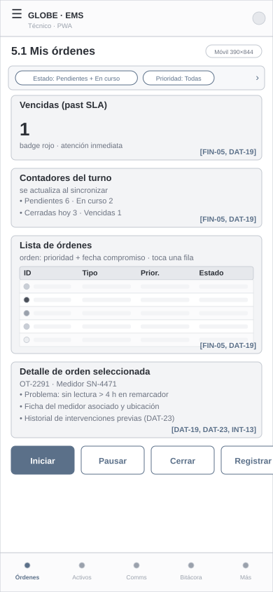
Pantalla de aterrizaje del perfil Técnico en terreno (PWA móvil). Muestra las órdenes de trabajo asignadas con indicadores de cabecera, una lista priorizada por severidad y fecha de compromiso, y un panel de detalle con la ficha del medidor asociado y las acciones de gestión de la orden. Diseñada para uso con una mano y señal intermitente.
Componentes / elementos
| Componente | Descripción | Reqs. PASA |
|---|---|---|
| Indicadores de cabecera | Órdenes pendientes / En curso / Cerradas hoy / Vencidas (past SLA). La cifra de vencidas se destaca con badge para dirigir la atención. | FIN-05, DAT-19 |
| Lista de órdenes | ID, descripción, tipo (mantención / instalación / diagnóstico / CNR), mall, prioridad, fecha de asignación, fecha de compromiso y estado. Ordenada por prioridad + fecha de compromiso por defecto. | FIN-05, DAT-19 |
| Panel de detalle de orden | Descripción del problema, ficha del medidor asociado, historial de intervenciones previas (DAT-23) y botones: Iniciar / Pausar / Cerrar orden / Registrar intervención. | DAT-19, DAT-23, INT-13 |
Filtros disponibles
| Filtro | Opciones | Por defecto |
|---|---|---|
| Estado | Pendientes / En curso / Cerradas / Vencidas / Todas | Pendientes + En curso |
| Prioridad | Crítica / Alta / Media / Baja / Todas | Todas |
| Mall | Selector con buscador | Todos |
Tarjeta «Vencidas» aislada en la cabecera
El técnico abre la app para decidir qué atender primero, y el único número que altera su ruta del día es cuántas órdenes están vencidas; por eso ocupa la primera tarjeta con badge y no se diluye entre los demás contadores. La conclusión accionable va antes que el resumen.
Principio: Jerarquía por consecuencia: lo que cambia la decisión se muestra primero.
Filas de la lista como objetivos táctiles grandes
Cada fila es un objetivo alto con el punto de estado a la izquierda porque la lista se toca de pie, con guantes o una sola mano; filas generosas y separadas reducen los toques errados frente al equipo.
Principio: Ley de Fitts en móvil: objetivos táctiles amplios (≈44 px) y bien espaciados.
Barra de acciones fija al pie
Iniciar / Pausar / Cerrar / Registrar se colocan en la franja inferior, dentro del arco natural del pulgar, para que la acción que cambia el estado de la orden esté siempre al alcance sin reacomodar la mano.
Principio: Zona del pulgar (thumb zone): las acciones frecuentes viven abajo en móvil.
Orden por prioridad + compromiso por defecto
El sistema ordena la lista para que el técnico no tenga que calcular cuál es más urgente bajo presión de tiempo; la secuencia correcta llega hecha, reduciendo la carga mental en terreno.
Principio: Valores por defecto que ejecutan el trabajo por el usuario.
Apilado estricto en una columna
A diferencia del escritorio, aquí todo se apila en una sola columna para eliminar el scroll horizontal y la lectura en zigzag cuando la pantalla es pequeña y la conexión es intermitente.
Principio: Diseño móvil primero: un único eje de lectura vertical.
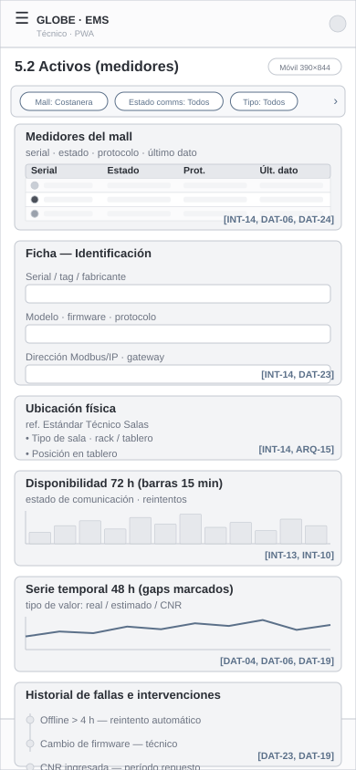
Inventario de medidores accesible desde terreno con búsqueda y filtros, y ficha técnica detallada del medidor seleccionado. La ficha reúne identificación, ubicación física, estado de comunicación con disponibilidad de 72 h, serie temporal de 48 h con gaps marcados por tipo de valor, e historial de fallas e intervenciones.
Componentes / elementos
| Componente | Descripción | Reqs. PASA |
|---|---|---|
| Búsqueda y filtros | Por serial, tag, mall, zona, gateway, protocolo y estado. Filtros: mall / estado de comunicación / tipo / con alarma activa. | INT-14, ARQ-15 |
| Lista de medidores | Serial, nombre/tag, mall, zona, estado (online / offline / sin dato > 4 h), protocolo (Modbus / DLMS / otro), último dato y timestamp. | INT-14, DAT-06, DAT-24 |
| Ficha del medidor — Identificación | Serial, fabricante, modelo, firmware, protocolo, dirección Modbus/IP y gateway asignado. | INT-14, DAT-23 |
| Ficha del medidor — Ubicación física | Tipo de sala (ref. Estándar Técnico Salas), rack / tablero / posición. | INT-14, ARQ-15 |
| Ficha del medidor — Estado de comunicación | Timestamp, reintentos e historial de disponibilidad de 72 h en barras de 15 min. | INT-13, INT-10 |
| Ficha del medidor — Serie temporal 48 h | Serie de las últimas 48 h con gaps marcados y tipo de valor (real / estimado / CNR). | DAT-04, DAT-06, DAT-19 |
| Ficha del medidor — Historial de fallas | Fallas e intervenciones registradas sobre el medidor, en orden cronológico. | DAT-23, DAT-19 |
Filtros disponibles
| Filtro | Opciones | Por defecto |
|---|---|---|
| Mall | Selector con buscador | Costanera |
| Estado de comunicación | Todos / Online / Offline / Sin dato > 4 h | Todos |
| Tipo | Todos / Remarcador / Sub-medidor | Todos |
| Con alarma activa | Sí / No | No |
Lista compacta arriba, ficha desplegada debajo
El técnico primero localiza el medidor y luego lo inspecciona; el layout respeta esa secuencia buscar → seleccionar → inspeccionar en un solo scroll vertical, sin abrir pantallas nuevas que le hagan perder la referencia del equipo que tiene delante.
Principio: Revelación progresiva: del listado al detalle sin cambiar de contexto.
Identificación como ficha campo-por-línea
Serial, protocolo y dirección Modbus se muestran uno por renglón etiquetado para poder cotejarlos contra el tablero físico sin ambigüedad; en terreno un dígito confundido es una intervención perdida.
Principio: Reconocimiento sobre recuerdo y correspondencia con el objeto físico.
Histograma de disponibilidad de 72 h
Las barras de 15 min dejan ver de un vistazo si la caída es puntual o sostenida, lo que decide si el técnico revisa el enlace o el equipo; el patrón temporal se lee antes que cualquier cifra.
Principio: Codificación visual pre-atenta de patrones temporales.
Serie de 48 h con gaps dibujados explícitamente
Los huecos se representan como vacíos, no como ceros, para que el técnico distinga «sin dato» de «consumo nulo» y no diagnostique una falla donde solo faltó la lectura.
Principio: Hacer visible el estado ausente; prevención de error de interpretación.
Historial como línea de tiempo al final
La cronología de fallas cierra la ficha para que el técnico sepa qué se intentó antes y no repita una intervención ya realizada por otro turno.
Principio: Continuidad y contexto: el sistema recuerda el historial por el usuario.
Densidad reducida frente al escritorio
La ficha muestra menos elementos por pantalla que su equivalente de estación fija, priorizando lo que se consulta junto al equipo con señal intermitente y evitando saturar una pantalla pequeña.
Principio: Economía atencional adaptada al contexto móvil.
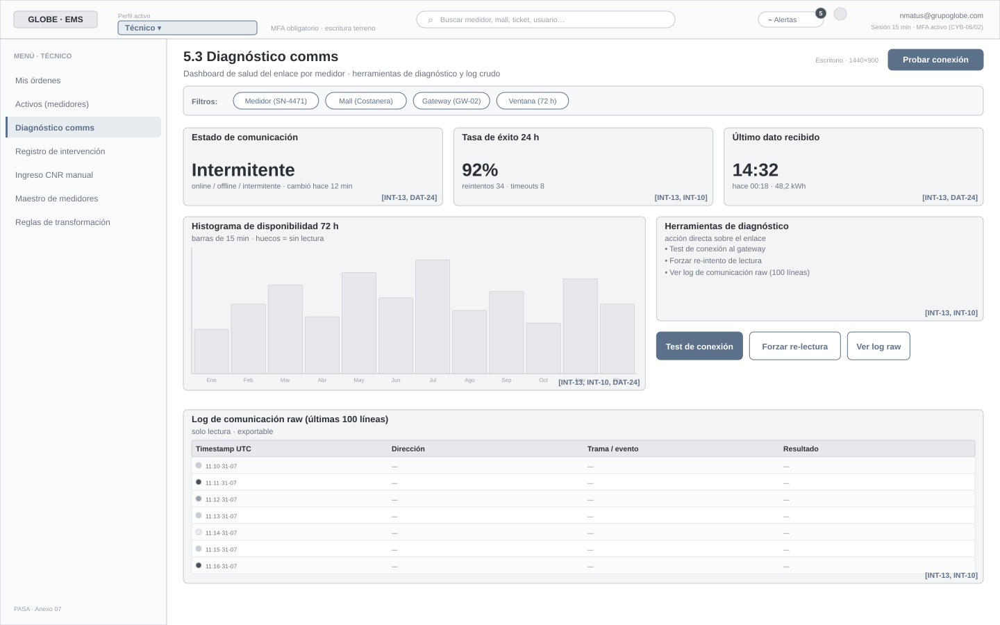
Consola de diagnóstico de comunicaciones por medidor. Reúne el panel de estado del enlace (estado actual, último dato y tasa de éxito de 24 h), el histograma de disponibilidad de 72 h y las herramientas de diagnóstico activo, con acceso al log de comunicación crudo. Orientada a estación de escritorio por el detalle técnico que maneja.
Componentes / elementos
| Componente | Descripción | Reqs. PASA |
|---|---|---|
| Panel de diagnóstico | Estado actual (online / offline / intermitente). Último dato: valor, timestamp y tiempo transcurrido. Tasa de éxito de 24 h: % de intentos exitosos, reintentos y timeouts. Histograma de disponibilidad de 72 h. | INT-13, INT-10, DAT-24 |
| Histograma de disponibilidad 72 h | Barras de 15 min; los huecos indican tramos sin lectura, revelando si la falla es puntual o sostenida. | INT-13, INT-10, DAT-24 |
| Herramientas de diagnóstico | Test de conexión al gateway, forzar re-intento de lectura y ver el log de comunicación raw (últimas 100 líneas). | INT-13, INT-10 |
Filtros disponibles
| Filtro | Opciones | Por defecto |
|---|---|---|
| Medidor | Selector por serial / tag | SN-4471 |
| Mall | Selector con buscador | Costanera |
| Gateway | Selector de gateway del mall | GW-02 |
| Ventana | 24 h / 48 h / 72 h | 72 h |
Tres KPIs de estado en la cabecera
Estado, tasa de éxito y último dato responden la primera pregunta del técnico —«¿está vivo el enlace?»— antes de que toque ninguna herramienta, de modo que el diagnóstico empieza con el estado visible y no con una acción a ciegas.
Principio: Visibilidad del estado del sistema.
Histograma de 72 h como pieza principal
El patrón de intermitencia ocupa el bloque de mayor peso porque es lo que dicta qué herramienta usar: una caída sostenida apunta al gateway, una intermitente a la señal. La evidencia manda sobre las acciones.
Principio: Jerarquía por valor diagnóstico.
Herramientas separadas de las lecturas
Test, forzar y log se agrupan a la derecha, apartados de los indicadores, para que el técnico no confunda «ver el estado» con «actuar sobre el equipo»; leer y modificar viven en zonas distintas.
Principio: Separación entre información y acción.
«Forzar re-lectura» ofrecida sin confirmación pesada
Reintentar una lectura es seguro y repetible (INT-10), así que se expone como acción directa; la fricción se reserva para lo que no tiene vuelta atrás, no para operaciones inocuas.
Principio: Coste de interacción proporcional al riesgo de la acción.
Log crudo al pie, en ancho completo
Las 100 líneas de trama son el último recurso del diagnóstico, por eso cierran el recorrido y ocupan todo el ancho, permitiendo leer las tramas completas sin recorte cuando el técnico ya agotó la vista resumida.
Principio: Jerarquía por frecuencia: el detalle crudo al final del flujo.
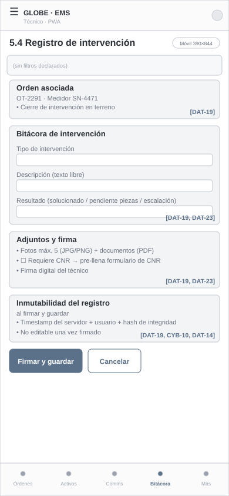
Formulario de bitácora de la intervención realizada en terreno, con adjuntos y firma digital del técnico. Al firmar y guardar, el registro se vuelve inmutable con timestamp del servidor, usuario y hash de integridad, y no puede editarse. Un checkbox permite encadenar el ingreso de CNR.
Componentes / elementos
| Componente | Descripción | Reqs. PASA |
|---|---|---|
| Formulario de bitácora | Tipo de intervención / Descripción (texto libre) / Resultado (solucionado / pendiente piezas / requiere escalación) / Adjuntos: fotos máx. 5 (JPG/PNG) + documentos (PDF) / Firma digital del técnico. El checkbox «requiere CNR» pre-llena el formulario de CNR. | DAT-19, DAT-23 |
| Validaciones e inmutabilidad | Al guardar: registro inmutable con timestamp del servidor, usuario y hash de integridad. No se puede editar una vez firmado. | DAT-19, CYB-10, DAT-14 |
Formulario corto en una sola columna
Se muestran pocos campos apilados a la vez para poder completar la bitácora de pie y con una mano justo al terminar el trabajo, evitando formularios que exijan sentarse o dos manos.
Principio: Minimizar campos por vista; baja carga de entrada en terreno.
Resultado como opción cerrada
Solucionado / pendiente piezas / escalación se elige de una lista en vez de escribirse, lo que acelera el registro con guantes y estandariza el dato para los tableros aguas abajo.
Principio: Reconocer sobre escribir; entrada restringida y consistente.
Bloque de inmutabilidad visible antes de firmar
Se advierte explícitamente que el registro no será editable antes de mostrar el botón de firma, para que el técnico revise el contenido sabiendo que no habrá corrección posterior.
Principio: Prevención de errores; visibilidad de consecuencias irreversibles.
«Firmar y guardar» como único CTA de acento
Un solo botón primario, claramente distinto de «Cancelar», evita firmar por accidente y deja inequívoca la acción que cierra la bitácora.
Principio: Jerarquía de acciones; una salida primaria inconfundible.
Checkbox «requiere CNR» que pre-llena el CNR
Cuando la intervención implica un consumo no registrado, el checkbox arrastra los datos ya capturados al formulario de CNR sin re-teclearlos, siguiendo el flujo natural del terreno.
Principio: Continuidad de tarea; evitar el reingreso de datos.
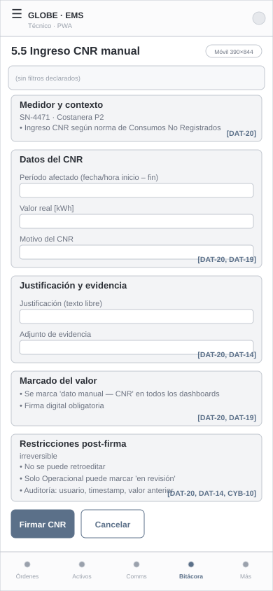
Formulario de ingreso manual de Consumo No Registrado (CNR) siguiendo la norma correspondiente. Captura período afectado, valor real, motivo, justificación, evidencia y firma digital. El valor queda marcado como dato manual — CNR en todos los dashboards y, una vez firmado, no puede retroeditarse.
Componentes / elementos
| Componente | Descripción | Reqs. PASA |
|---|---|---|
| Formulario CNR | Período afectado (fecha/hora inicio – fin) / Valor real [kWh] / Motivo del CNR / Justificación (texto libre) / Adjunto de evidencia / Firma digital. El valor queda marcado como 'dato manual — CNR' en todos los dashboards. | DAT-20, DAT-14, DAT-19 |
| Restricciones post-firma | No se puede retroeditar. Solo puede marcarse como 'en revisión' por el perfil operacional. Registra en pista de auditoría: usuario, timestamp y valor anterior si existía. | DAT-20, DAT-14, CYB-10 |
Formulario dividido en dos bloques (datos / justificación)
Separar los datos duros del CNR de la justificación y evidencia parte el formulario en unidades más cortas y agrupa campos afines, reduciendo la sensación de trámite largo en una pantalla pequeña.
Principio: Chunking y agrupación por afinidad.
Restricciones post-firma explícitas antes del botón
El aviso de irreversibilidad se coloca justo antes de la firma para que el técnico entienda que no hay marcha atrás en el mismo momento en que decide confirmar.
Principio: Prevención de errores en acciones irreversibles.
Marcado «dato manual — CNR» comunicado en pantalla
Se informa que el valor quedará etiquetado como manual en todos los dashboards, alineando la expectativa del técnico con el efecto real del ingreso y evitando que crea que introduce una lectura ordinaria.
Principio: Visibilidad del efecto del sistema; honestidad sobre la naturaleza del dato.
Confirmación por firma digital, no un simple guardar
La firma eleva el ingreso a un compromiso trazable, proporcional a un dato que altera consumos certificados; guardar sin firma sería demasiado liviano para el peso del acto.
Principio: Correspondencia entre gravedad del acto y fricción exigida.
Targets grandes y campo numérico para [kWh]
Campos amplios y el tipo de dato adecuado para el valor en kWh reducen los errores de tecleo en terreno, donde una cifra mal ingresada quedaría fijada de forma inmutable.
Principio: Ley de Fitts; ajuste del control al tipo de dato.
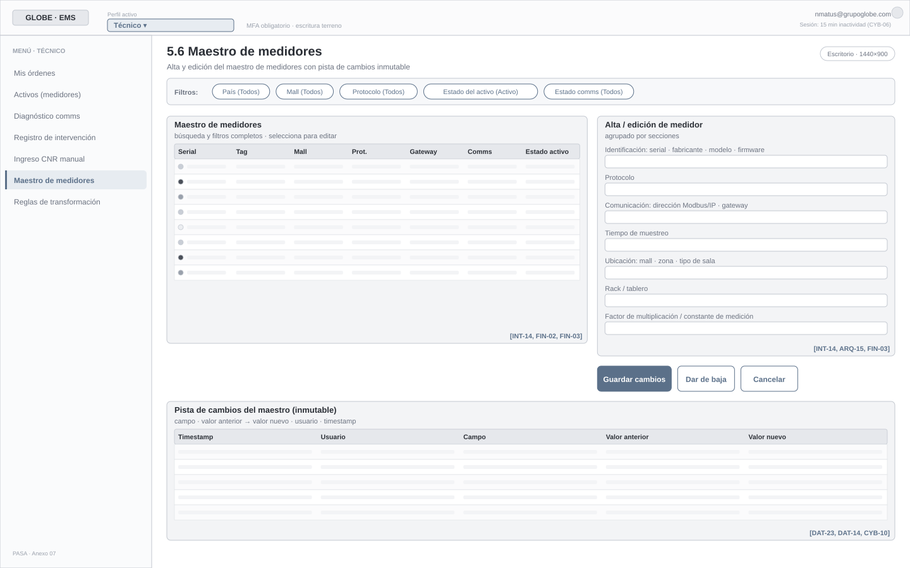
Gestión del maestro de medidores: tabla completa con búsqueda y filtros, formulario de alta / edición agrupado por secciones y pista de cambios inmutable. Permite incorporar nuevos puntos de medida sin consultoría específica (FIN-02 / FIN-03). Pensada para estación de escritorio por el volumen de campos y la precisión requerida.
Componentes / elementos
| Componente | Descripción | Reqs. PASA |
|---|---|---|
| Lista y búsqueda del maestro | Tabla completa: serial, tag, mall, zona, protocolo, gateway, estado comms, fecha de alta y estado del activo (activo / baja / en mantención). Búsqueda y filtros completos. | INT-14, FIN-02, FIN-03 |
| Formulario de alta / edición | Identificación (serial, fabricante, modelo, firmware, protocolo). Configuración de comunicación (dirección Modbus/IP, gateway, tiempo de muestreo). Ubicación (mall, zona, tipo de sala, rack, tablero). Factor de multiplicación / constante de medición. | INT-14, ARQ-15, FIN-03 |
| Pista de cambios del maestro | Toda modificación registra: campo cambiado, valor anterior, valor nuevo, usuario y timestamp. Inmutable. | DAT-23, DAT-14, CYB-10 |
Filtros disponibles
| Filtro | Opciones | Por defecto |
|---|---|---|
| Mall | Selector con buscador | Todos |
| Protocolo | Modbus / DLMS / BACnet / Otro / Todos | Todos |
| Estado del activo | Activo / Baja / En mantención / Todos | Activo |
| Estado de comunicación | Todos / Online / Offline / Sin dato > 4 h | Todos |
Tabla a la izquierda, formulario a la derecha
Es un patrón maestro-detalle: el técnico selecciona un medidor en la lista y lo edita en el panel contiguo sin cambiar de pantalla, manteniendo a la vista el resto del inventario mientras modifica un registro.
Principio: Patrón maestro-detalle; contexto persistente durante la edición.
Formulario largo agrupado por secciones
Identificación, comunicación, ubicación y medición se ordenan en bloques lógicos que guían el alta paso a paso; agrupar decenas de campos por afinidad evita que un formulario extenso resulte abrumador.
Principio: Agrupación por afinidad y progresión lógica del formulario.
«Dar de baja» separado de «Guardar cambios»
La acción que retira un activo se distingue visualmente del guardado ordinario para que el técnico no la accione por inercia al confirmar una edición rutinaria.
Principio: Separación de acciones destructivas; prevención de error.
Pista de cambios inmutable al pie
Mostrar valor anterior → nuevo, usuario y timestamp en la misma pantalla cumple la trazabilidad (DAT-23) y disuade cambios sin registro, porque cada modificación queda expuesta y firmada.
Principio: Transparencia; rendición de cuentas visible.
Diseño de escritorio, no de terreno
El alta y la edición del maestro son trabajo de precisión con muchos campos, propio de una estación fija; por eso esta pantalla se saca del layout móvil de una columna que sirve para consulta en terreno.
Principio: Correspondencia dispositivo-tarea.
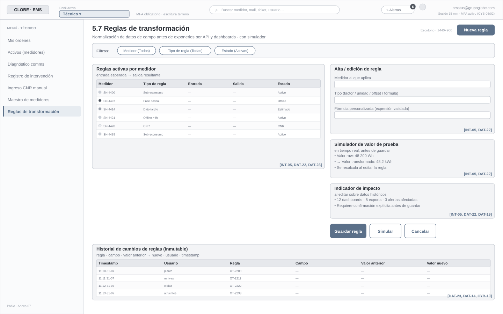
Módulo dentro del maestro de medidores para configurar las reglas de normalización de los datos de campo antes de exponerlos por la API y los dashboards (INT-05). Combina la lista de reglas activas, el formulario de alta / edición con simulador de valor de prueba, el indicador de impacto y el historial de cambios inmutable.
Componentes / elementos
| Componente | Descripción | Reqs. PASA |
|---|---|---|
| Lista de reglas activas por medidor | Tabla: medidor (serial/tag), tipo de regla (factor de escala / conversión de unidades / offset / fórmula personalizada), valor de entrada esperado, valor de salida resultante, estado (activa/inactiva), fecha de creación y usuario que la creó. | INT-05, DAT-22, DAT-23 |
| Formulario de alta / edición de regla | Medidor al que aplica. Tipo de transformación: factor multiplicador [número], conversión de unidad (ej. Wh → kWh), offset aditivo, fórmula personalizada (expresión validada). Campo de valor de prueba con simulador: ingresa un valor raw y muestra el valor transformado resultante en tiempo real antes de guardar. | INT-05, DAT-22 |
| Historial de cambios de reglas | Toda modificación registra: regla afectada, campo cambiado, valor anterior, valor nuevo, usuario y timestamp. Inmutable. Permite al auditor verificar cuándo y por qué cambió una regla de conversión. | DAT-23, DAT-14, CYB-10 |
| Indicador de impacto | Al editar una regla: aviso de cuántos dashboards, exports y alertas activas se ven afectados por el cambio. Solicita confirmación explícita antes de guardar cambios sobre medidores con datos históricos. | INT-05, DAT-22, DAT-19 |
Filtros disponibles
| Filtro | Opciones | Por defecto |
|---|---|---|
| Medidor | Selector por serial / tag | Todos |
| Tipo de regla | Factor de escala / Conversión de unidades / Offset / Fórmula personalizada / Todas | Todas |
| Estado | Activas / Inactivas / Todas | Activas |
Simulador de valor de prueba junto al formulario
Mostrar el valor transformado en tiempo real mientras se define la regla convierte una conversión abstracta en un resultado verificable; el técnico comprueba que 48 200 Wh se vuelven 48,2 kWh antes de comprometer nada.
Principio: Feedback inmediato; prevención de errores antes de guardar.
Indicador de impacto antes de confirmar
Avisar cuántos dashboards, exports y alertas dependen de la regla da al técnico el alcance real del cambio, para que decida sabiendo a cuántos consumidores del dato afecta.
Principio: Visibilidad de consecuencias; decisión informada.
Confirmación explícita sobre datos históricos
Cambiar una conversión reescribe la interpretación de datos pasados, así que el sistema exige una confirmación deliberada cuando el medidor ya tiene historia, elevando la fricción justo donde el error es irreversible.
Principio: Fricción proporcional al riesgo; salvaguarda ante acción irreversible.
Lista con entrada → salida visible por fila
Ver el par esperado en cada regla permite auditar de un vistazo si una transformación hace lo previsto, sin abrir el detalle de cada una.
Principio: Transparencia del comportamiento y escaneabilidad.
Historial inmutable al pie
El registro de quién cambió qué y cuándo permite al auditor reconstruir el porqué de una conversión meses después, cumpliendo CYB-10 y cerrando la pantalla con la evidencia de gobierno del dato.
Principio: Trazabilidad; memoria del sistema.
«Guardar» y «Simular» como acciones distintas
Simular no compromete y guardar sí; separarlas evita que el técnico persista una regla que solo quería probar, distinguiendo la exploración del compromiso.
Principio: Distinción entre exploración y compromiso.
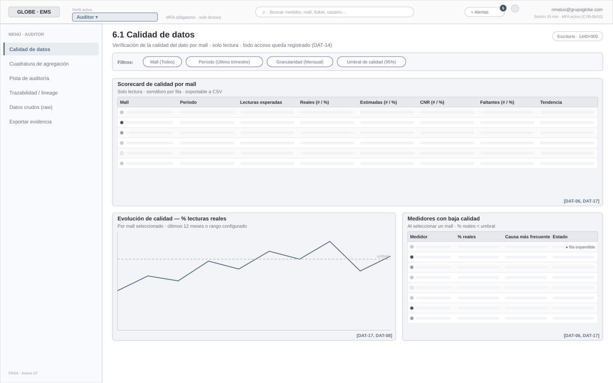
Pantalla de verificación de la calidad del dato para el auditor externo. Es de solo lectura y todo acceso queda registrado (DAT-14). Presenta un scorecard por mall con el desglose de lecturas reales, estimadas, CNR y faltantes; la evolución del porcentaje de lecturas reales en el tiempo; y, al seleccionar un mall, el detalle de los medidores que caen por debajo del umbral de calidad configurado.
Componentes / elementos
| Componente | Descripción | Reqs. PASA |
|---|---|---|
| Scorecard de calidad por mall | Tabla con mall, período, total de lecturas esperadas, lecturas reales (# y %), estimadas (# y %), CNR (# y %), faltantes (# y %) y tendencia vs. período anterior. Semáforo por fila. Exportable a CSV. | DAT-06, DAT-17 |
| Gráfico de evolución de calidad | Línea del % de lecturas reales por mes para el mall seleccionado, con línea de umbral. Últimos 12 meses o el rango configurado. Permite detectar deterioros sostenidos de la calidad. | DAT-17, DAT-08 |
| Detalle de medidores con baja calidad | Al hacer clic en un mall: lista de medidores cuyo % de lecturas reales cae bajo el umbral configurado, con la causa más frecuente si está disponible. Fila expandible con el histórico del medidor. | DAT-06, DAT-17 |
Filtros disponibles
| Filtro | Opciones | Por defecto |
|---|---|---|
| Mall | Selector de mall (buscador) | Todos |
| Período | Rango personalizado hasta 5 años | Último trimestre |
| Granularidad | Mensual / Diaria | Mensual |
| Umbral de alerta de calidad | Campo numérico % (ej. < 95%) | 95% |
Scorecard como bloque principal a ancho completo
El auditor no busca un titular sino la evidencia completa: el scorecard ocupa toda la franja superior para mostrar de una vez las cuatro categorías de calidad (real / estimada / CNR / faltante) con su conteo y porcentaje, de modo que la cifra y su base convivan en la misma fila y no haya que confiar en un porcentaje sin ver de cuántas lecturas sale.
Principio: Visibilidad de los datos crudos tras cada indicador; no pedir confianza ciega en una métrica agregada.
Conteo absoluto junto al porcentaje en cada celda
Cada categoría muestra el número (#) y el porcentaje a la vez porque un 5% de CNR significa cosas distintas sobre 200 o sobre 200.000 lecturas; para verificar cumplimiento el auditor necesita el denominador visible y no una proporción descontextualizada.
Principio: Relación parte-todo explícita; prevención de interpretación errónea de porcentajes.
Umbral configurable dibujado sobre la línea de evolución
El límite de aceptación (95% por defecto) se traza como línea en el gráfico y como filtro editable, para que el auditor fije el criterio contra el que audita y vea de inmediato qué meses lo cruzan, en lugar de comparar mentalmente cada punto contra un número recordado.
Principio: Reconocer antes que recordar; el criterio de evaluación es visible, no memorizado.
Detalle de medidores solo al descender desde el mall
La lista de medidores problemáticos aparece a la derecha únicamente cuando el auditor selecciona un mall del scorecard; encadenar el detalle al agregado le permite pasar del hallazgo («este mall incumple») a la prueba («estos medidores lo causan») sin cambiar de pantalla ni perder el caso que está revisando.
Principio: Revelación progresiva desde el agregado hacia la evidencia individual.
Ausencia total de controles de edición
En toda la pantalla no hay ningún botón que modifique una lectura o su flag: el rol es de verificación, no de corrección. La ausencia deliberada de affordances de escritura le confirma al auditor que lo que ve es el dato tal como quedó registrado y que nadie puede alterarlo desde aquí.
Principio: Correspondencia rol-affordance; la inmutabilidad se comunica quitando, no explicando.
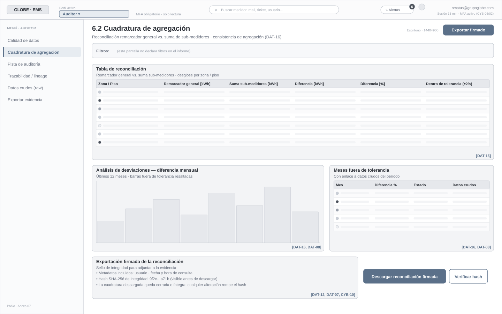
Pantalla de cuadratura que verifica el requisito DAT-16: la suma de los sub-medidores (locatarios) debe coincidir con el medidor general (remarcador) dentro de una tolerancia configurable (±2% por defecto). Muestra la reconciliación con desglose por zona/piso, el análisis histórico de las desviaciones y una exportación firmada con hash SHA-256 para cerrar la evidencia.
Componentes / elementos
| Componente | Descripción | Reqs. PASA |
|---|---|---|
| Tabla de reconciliación | Por zona/piso: remarcador general [kWh], suma de sub-medidores [kWh], diferencia [kWh] y [%], y bandera «dentro de tolerancia» (sí/no) contra el umbral configurable (ej. ±2%). | DAT-16 |
| Análisis de desviaciones | Gráfico de barras con la diferencia mensual de los últimos 12 meses, resaltando los meses fuera de tolerancia, junto a una tabla de esos meses con enlace directo a los datos crudos del período. | DAT-16, DAT-08 |
| Exportación firmada | Descarga de la reconciliación con metadatos (usuario, fecha de consulta) y hash SHA-256 de integridad, para adjuntar como evidencia verificable. | DAT-12, DAT-07, CYB-10 |
Diferencia expresada en kWh y en % lado a lado
Cada fila muestra la brecha en unidad absoluta y relativa a la vez, porque la tolerancia se define en porcentaje pero el descuadre se investiga en energía; ofrecer ambas evita que el auditor tenga que calcular a mano y le deja cotejar directamente la diferencia contra el umbral del que depende el veredicto.
Principio: Datos en la unidad de la decisión; eliminar cálculo mental del flujo de verificación.
Columna «dentro de tolerancia» con veredicto explícito
La última columna resuelve la pregunta central de la pantalla —cuadra o no cuadra— con un sí/no y color, en vez de dejar que el auditor lo deduzca de la cifra. Colocar el juicio como dato explícito y no implícito acelera el barrido de decenas de zonas y hace autoevidente dónde mirar.
Principio: Hacer explícito el estado del sistema; reducir la carga de inferencia.
Enlace de cada mes fuera de tolerancia a sus datos crudos
Los meses descuadrados no terminan en una alerta: cada uno enlaza a los datos crudos que lo originaron, para que el auditor recorra la cadena descuadre → período → lectura sin reconstruir la ruta manualmente. La evidencia queda a un clic del hallazgo.
Principio: Trazabilidad accionable; el hallazgo y su prueba conectados.
Hash SHA-256 mostrado antes de descargar
El hash de integridad se exhibe en pantalla junto a los metadatos, no solo dentro del archivo, para que el auditor pueda registrar el sello en su bitácora y verificar después que el documento que presenta es exactamente el que consultó. La integridad es comprobable a simple vista.
Principio: Verificabilidad de la evidencia; el sello es visible, no está enterrado.
Exportación firmada como cierre del recorrido
El bloque de descarga se ubica al pie, tras la reconciliación y su análisis, porque materializa el resultado del trabajo: primero el auditor verifica, luego se lleva la prueba sellada. Situar la salida al final alinea la pantalla con la secuencia natural de la tarea de auditoría.
Principio: Correspondencia con el flujo de trabajo real; la acción de cierre al término del recorrido.
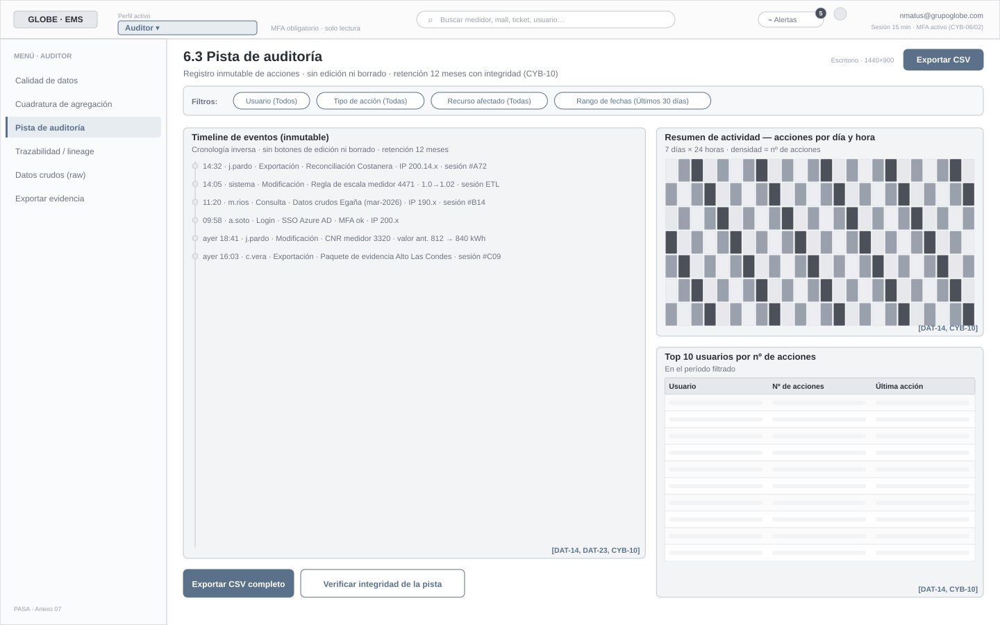
Pista de auditoría inmutable que registra cada acción sobre el sistema con retención de 12 meses e integridad garantizada (CYB-10). Presenta un timeline en orden cronológico inverso —sin ningún control de edición o borrado— y un resumen de actividad con heatmap por día/hora y el ranking de los 10 usuarios más activos del período filtrado.
Componentes / elementos
| Componente | Descripción | Reqs. PASA |
|---|---|---|
| Timeline de eventos (inmutable) | Lista cronológica inversa: timestamp, usuario, acción, recurso afectado, valor anterior/posterior (para modificaciones), IP/sesión. No hay botones de edición ni borrado. Exportable completo a CSV. | DAT-14, DAT-23, CYB-10 |
| Resumen de actividad | Heatmap de acciones por día y hora que revela patrones y picos de actividad, más el Top 10 de usuarios por número de acciones en el período filtrado. | DAT-14, CYB-10 |
Filtros disponibles
| Filtro | Opciones | Por defecto |
|---|---|---|
| Usuario | Selector de usuario del portafolio | Todos |
| Tipo de acción | Consulta / Modificación / Exportación / Login / Todas | Todas |
| Recurso afectado | Medidor / CNR / Configuración / Todas | Todas |
| Rango de fechas | Date picker (hasta 12 meses de retención) | Últimos 30 días |
Timeline sin ningún control de edición ni borrado
El registro se presenta como una columna de eventos que solo se pueden leer: no existe un ícono de lápiz, papelera o menú contextual en ninguna fila. Esa ausencia es el mensaje —la pista es append-only— y le da al auditor la certeza de que lo que ve es lo que ocurrió, sin posibilidad de que alguien lo haya retocado desde la interfaz.
Principio: La inmutabilidad se hace creíble eliminando toda affordance de escritura, no con un cartel.
Orden cronológico inverso por defecto
Lo más reciente encabeza la lista porque la pregunta habitual del auditor es «¿qué pasó último?» y porque investigar un incidente suele empezar por el presente y retroceder. Fijar ese orden evita reordenar en cada visita y da un punto de entrada estable.
Principio: Valor por defecto alineado a la tarea dominante; consistencia del punto de entrada.
Valor anterior → posterior en la misma línea de modificación
Cuando la acción es una modificación, la fila muestra el antes y el después juntos (ej. 812 → 840 kWh); ver ambos estados sin abrir un detalle permite juzgar de un vistazo la magnitud y el sentido del cambio, que es justo lo que el auditor debe evaluar.
Principio: Contexto completo en la unidad de lectura; el cambio se entiende sin navegación adicional.
Heatmap día × hora como lectura de patrones
El resumen usa una matriz de color porque el auditor busca lo anómalo —accesos de madrugada, ráfagas de exportación— y una cuadrícula de densidad delata esos patrones de forma pre-atenta, algo imposible de ver recorriendo miles de filas del timeline una por una.
Principio: Codificación pre-atenta para detección de anomalías; la vista agregada complementa al registro lineal.
Exportar CSV completo y verificar integridad al pie del timeline
Las dos acciones —llevarse el registro y comprobar que no fue alterado— se colocan bajo el timeline, que es su objeto; separarlas del ranking evita que el auditor las confunda con acciones sobre el resumen y refuerza que operan sobre la pista íntegra.
Principio: Proximidad entre acción y objeto; agrupación por afinidad funcional.
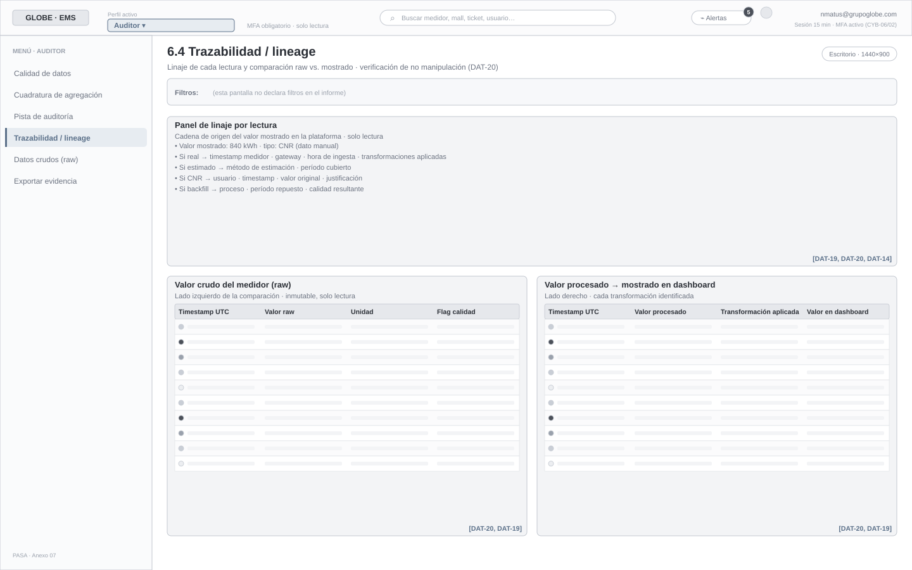
Pantalla de trazabilidad que reconstruye el linaje de cada lectura y permite verificar que los datos no fueron manipulados manualmente (DAT-20). El panel superior describe la cadena de origen del valor mostrado según su tipo (real / estimado / CNR / backfill); debajo, una comparación lado a lado enfrenta el valor crudo del medidor con el valor procesado y el que finalmente aparece en el dashboard, identificando cada transformación aplicada.
Componentes / elementos
| Componente | Descripción | Reqs. PASA |
|---|---|---|
| Panel de linaje por lectura | Valor mostrado en la plataforma y su tipo. Si es real: timestamp del medidor, gateway, hora de ingesta y transformaciones aplicadas. Si es estimado: método y período cubierto. Si es CNR: usuario, timestamp, valor original y justificación. Si es backfill: proceso, período y calidad. | DAT-19, DAT-20, DAT-14 |
| Comparación raw vs. mostrado | Tabla lado a lado: valor crudo del medidor / valor procesado / valor en el dashboard, con cada transformación intermedia identificada explícitamente. | DAT-20, DAT-19 |
Comparación en dos tablas contiguas raw | procesado
El crudo y el mostrado se enfrentan en dos columnas pegadas, fila a fila y con el mismo timestamp, porque el auditor coteja valor contra valor: alinearlos horizontalmente convierte la pregunta «¿este número salió de aquel?» en un simple barrido lateral, sin saltar entre pantallas ni memorizar cifras.
Principio: Comparación lado a lado; minimizar la distancia entre los datos que se contrastan.
Cada transformación nombrada en su propia celda
Entre el valor raw y el del dashboard se explicita qué operación se aplicó (factor de escala, conversión de unidad, offset), en lugar de mostrar solo el resultado. Hacer visible el paso intermedio es lo que permite verificar que la diferencia es una regla legítima y no una manipulación silenciosa.
Principio: Transparencia del proceso; toda transformación es auditable, ninguna es una caja negra.
Panel de linaje adaptado al tipo de dato
La cadena que se muestra cambia según el valor sea real, estimado, CNR o backfill, porque cada origen exige comprobar cosas distintas —una estimación pide su método; un CNR pide quién y por qué lo ingresó—. Mostrar solo los campos pertinentes evita ruido y dirige la verificación a lo que realmente importa en cada caso.
Principio: Revelación contextual; el contenido se ajusta al objeto que se audita.
CNR con valor original y justificación siempre a la vista
Cuando la lectura es un dato manual (CNR), el panel expone el valor original, el usuario y la justificación registrada, no solo el valor final. Conservar el rastro completo del dato intervenido es la esencia de la trazabilidad: el auditor ve qué había antes de la mano humana.
Principio: Preservación del rastro de intervención; nada se sobrescribe sin dejar huella.
Toda la vista en solo lectura
Ni el panel de linaje ni las tablas de comparación ofrecen editar un valor o una transformación: el auditor reconstruye y verifica, pero no toca. La consistencia de esa restricción en todas las pantallas del perfil sostiene la confianza en que la evidencia observada es fiel al sistema.
Principio: Consistencia del modelo de solo lectura entre pantallas; confianza por restricción uniforme.
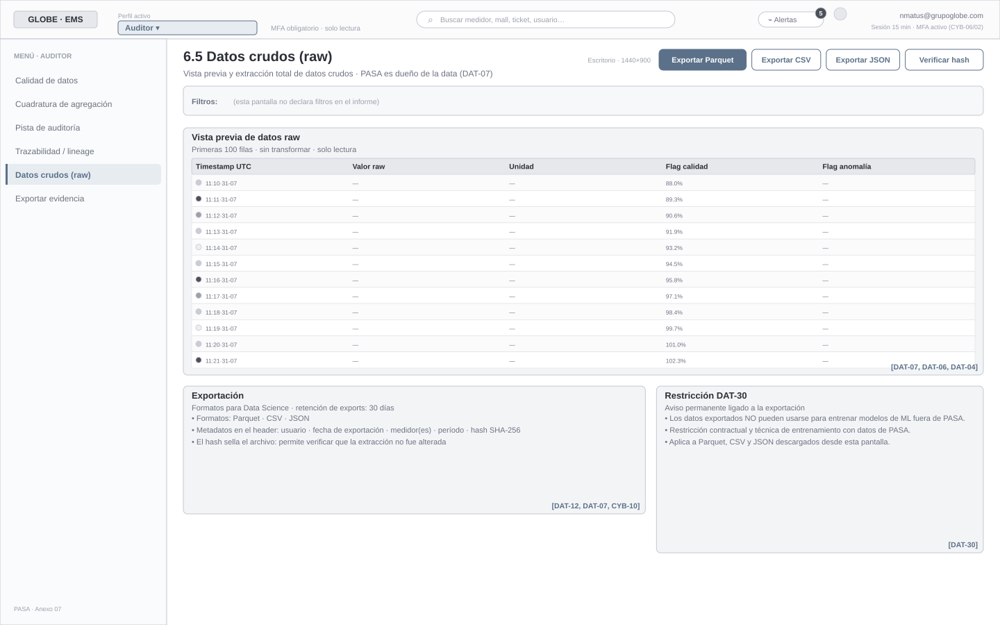
Acceso a los datos crudos sin transformar, en cumplimiento de que PASA es dueño de la data y puede extraerla totalmente sin costo adicional (DAT-07). Muestra una vista previa de las primeras 100 filas y permite exportar en Parquet, CSV o JSON con metadatos y hash SHA-256 en el header. Un aviso permanente reitera la restricción DAT-30 sobre el uso de los datos para entrenar modelos de ML fuera de PASA.
Componentes / elementos
| Componente | Descripción | Reqs. PASA |
|---|---|---|
| Vista previa de datos raw | Tabla con las primeras 100 filas: timestamp UTC, valor raw, unidad, flag de calidad (real/estimado/CNR) y flag de anomalía si aplica. | DAT-07, DAT-06, DAT-04 |
| Exportación | Formatos Parquet / CSV / JSON. Los archivos incluyen metadatos en el header: usuario, fecha de exportación, medidor(es), período y hash SHA-256. Retención de exports disponibles: 30 días. | DAT-12, DAT-07, CYB-10 |
| Restricción DAT-30 | Los datos exportados no pueden usarse para entrenar modelos de ML fuera de PASA: restricción contractual y técnica de entrenamiento con datos de PASA. | DAT-30 |
Vista previa antes de exportar
Se muestran las primeras 100 filas del crudo en pantalla para que el auditor confirme estructura, unidad y flags antes de descargar un dataset potencialmente enorme; previsualizar evita gastar tiempo y espacio en una extracción que resultó ser el medidor o el período equivocado.
Principio: Prevención de errores antes de una acción costosa; confirmación por muestra.
Timestamp en UTC y flags declarados en la propia tabla
El crudo se presenta con la hora en UTC y los flags de calidad y anomalía como columnas, sin normalizar a la zona local ni ocultar los marcadores; para auditar hay que ver el dato tal cual llegó, incluidas sus banderas, no una versión ya interpretada por la plataforma.
Principio: Fidelidad al dato de origen; no maquillar lo que se somete a verificación.
Tres formatos con hash embebido en el header
Parquet, CSV y JSON se ofrecen juntos porque el auditor los lleva a herramientas distintas, y cada archivo incrusta en su encabezado los metadatos y el hash SHA-256; así la prueba de integridad viaja con el dato y puede recomprobarse fuera de la plataforma en cualquier momento.
Principio: La evidencia es autocontenida y verificable de forma independiente.
Aviso DAT-30 fijo junto al bloque de exportación
La restricción de no entrenar ML fuera de PASA se ancla al lado del botón de descarga, no en unos términos legales lejanos, para que el límite de uso se lea en el momento y lugar exactos en que el auditor está a punto de llevarse los datos. La regla acompaña a la acción que la activa.
Principio: Ayuda en contexto; la advertencia vive donde ocurre la acción que regula.
Retención de exports de 30 días indicada explícitamente
Se declara que los archivos generados están disponibles 30 días para que el auditor planifique su descarga y no asuma un repositorio permanente; hacer visible la caducidad fija una expectativa correcta sobre la persistencia de la extracción.
Principio: Visibilidad de las restricciones del sistema; expectativas explícitas sobre el ciclo de vida del dato.
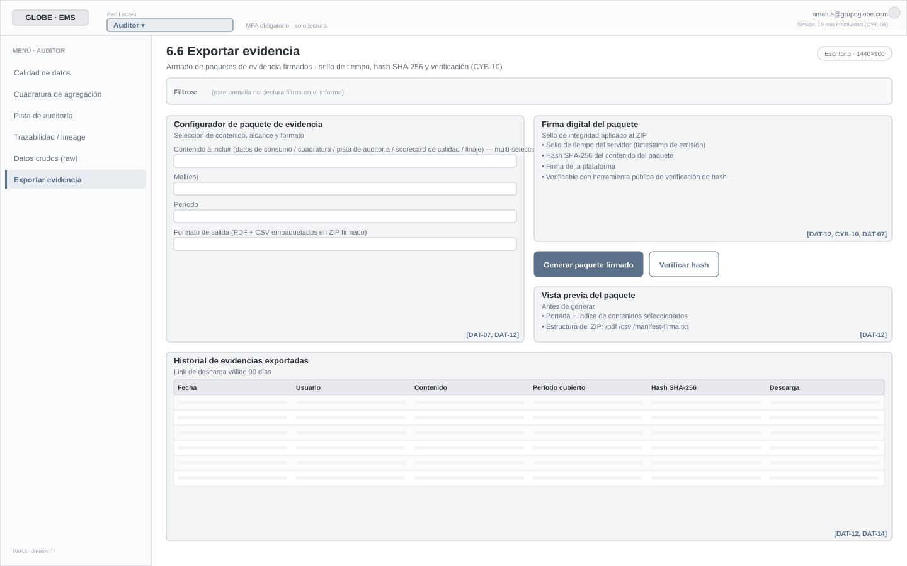
Pantalla de cierre del flujo del auditor: arma paquetes de evidencia firmados que consolidan el material verificado en las demás pantallas. Permite elegir el contenido, los malls y el período, genera un ZIP firmado (PDF + CSV) con sello de tiempo del servidor, hash SHA-256 y firma de la plataforma, y conserva un historial de las evidencias exportadas con enlace de descarga válido por 90 días.
Componentes / elementos
| Componente | Descripción | Reqs. PASA |
|---|---|---|
| Configurador de paquete de evidencia | Contenido a incluir: datos de consumo, cuadratura, pista de auditoría, scorecard de calidad y linaje de lecturas seleccionadas. Mall(es) y período. Formato: PDF + CSV empaquetados en un ZIP firmado. | DAT-07, DAT-12 |
| Firma digital del paquete | Sello de tiempo del servidor, hash SHA-256 del contenido y firma de la plataforma. El auditor puede verificar la integridad con una herramienta pública de verificación de hash. | DAT-12, CYB-10, DAT-07 |
| Historial de evidencias exportadas | Fecha, usuario, contenido, período cubierto y link de descarga (válido 90 días), con el hash del paquete a la vista. | DAT-12, DAT-14 |
Configurador a la izquierda, firma y salida a la derecha
La pantalla lee de izquierda a derecha el flujo «armo el paquete → veo su sello → lo genero»: el formulario en la columna izquierda es el primer paso y la firma, vista previa y botones a la derecha son el resultado. El auditor avanza sin retroceder ni buscar dónde se cierra la tarea.
Principio: Flujo secuencial alineado al recorrido de lectura; un único camino hacia el cierre.
Contenido como multi-selección que reúne el trabajo previo
El paquete se compone marcando qué evidencias incluir (cuadratura, pista, calidad, linaje), de modo que consolida en un solo entregable lo verificado pieza por pieza en las pantallas anteriores. Empaquetar desde una lista evita rehacer o re-exportar cada fuente por separado.
Principio: Agregación del trabajo previo en un solo artefacto; reducción de esfuerzo repetido.
Firma digital detallada antes del botón Generar
El panel de firma enumera los tres componentes del sello —tiempo de servidor, hash SHA-256 y firma de la plataforma— y anuncia que es verificable con herramienta pública, todo antes de generar; así el auditor sabe exactamente qué garantías tendrá el ZIP y no descubre el mecanismo de integridad recién al abrir el archivo.
Principio: Visibilidad anticipada de las garantías; el usuario conoce el resultado antes de comprometerse.
Vista previa de la estructura del ZIP
Antes de emitir se muestra la portada, el índice y la estructura de carpetas del paquete para que el auditor confirme que incluye lo que debe presentar; previsualizar el entregable evita generar y firmar un ZIP incompleto que luego habría que rehacer y re-firmar.
Principio: Confirmación previa a una acción irreversible; el sello se aplica una sola vez sobre lo correcto.
Historial con el hash de cada paquete y caducidad de 90 días
El registro de evidencias muestra el hash junto a cada descarga y advierte que el enlace vive 90 días; conservar el sello permite al auditor demostrar más tarde qué entregó exactamente, y explicitar la caducidad lo impulsa a resguardar el archivo antes de que expire.
Principio: El sistema recuerda la evidencia entregada; expectativa clara sobre la vigencia del enlace.
«Generar paquete firmado» como CTA primaria
El botón que emite el paquete se distingue en acento sólido frente a «Verificar hash», secundario, porque es el acto que cierra toda la auditoría; darle el mayor peso visual elimina cualquier duda sobre cuál es el paso final de la pantalla.
Principio: Jerarquía de acciones primaria/secundaria; ley de Fitts sobre el objetivo que cierra la tarea.
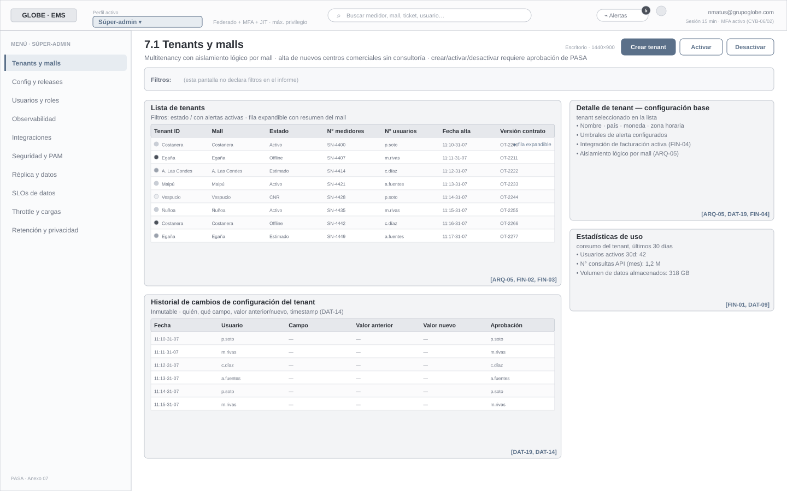
Administración de los tenants (centros comerciales) sobre el modelo multitenant con aislamiento lógico por mall y consolidación por país y región (ARQ-05). Permite dar de alta nuevos malls sin consultoría específica (FIN-02/FIN-03) y editar la configuración base. Las acciones de creación, activación y desactivación no se ejecutan de forma directa: abren un flujo de aprobación documentado con PASA (CYB-15) y quedan auditadas (DAT-14).
Componentes / elementos
| Componente | Descripción | Reqs. PASA |
|---|---|---|
| Lista de tenants | Tenant ID, nombre del mall, estado, nº de medidores activos, nº de usuarios activos, fecha de alta y versión de contrato. Filtros por estado y con alertas activas. | ARQ-05, FIN-02, FIN-03 |
| Detalle de tenant | Configuración base: nombre, país, moneda, zona horaria, umbrales de alerta e integración de facturación activa. Estadísticas de uso: usuarios activos en 30 días, nº de consultas API y volumen de datos almacenados. Historial de cambios de configuración. | ARQ-05, DAT-19, FIN-04 |
| Acciones de tenant | Crear / Activar / Desactivar — requiere aprobación de PASA mediante flujo documentado. Editar la configuración base con auditoría de cada cambio. | ARQ-05, CYB-15, DAT-14 |
Lista como columna dominante y detalle a la derecha
El súper-administrador entra a esta pantalla para localizar un tenant entre decenas, no para leer uno solo; por eso la tabla ocupa dos tercios del ancho y actúa como único punto de entrada, mientras el detalle se despliega al seleccionar una fila. Así el operador confirma sobre qué mall va a actuar antes de tener a la vista cualquier botón que lo modifique.
Principio: Jerarquía visual por tarea dominante; seleccionar el objeto antes que ofrecer la acción.
Botones Crear/Activar/Desactivar separados del detalle
Las acciones que cambian el estado de un tenant se agrupan en una barra propia, visualmente aparte de los datos de solo lectura, para que el máximo privilegio de este perfil no se traduzca en un clic accidental sobre un control mezclado con la información. Separar 'mirar' de 'actuar' reduce el error en operaciones de alto impacto.
Principio: Prevención de errores; separación entre visualización y acción destructiva.
Nota de gate PASA siempre visible
Aunque el perfil tiene permiso técnico para crear o desactivar, la nota fija explica que la acción abre un flujo de aprobación y no se ejecuta de inmediato. Hacer explícito el gate en la propia pantalla evita que el administrador espere un efecto instantáneo y sepa que falta la confirmación de un rol PASA.
Principio: Visibilidad del estado del sistema; ajustar el modelo mental al flujo real.
Historial de configuración como bloque permanente
El historial de cambios no se esconde en un modal: se muestra siempre bajo la lista para que cualquier edición sea trazable de un vistazo. Dado que todo lo que hace este perfil es auditado por PASA, exponer el registro en pantalla refuerza la responsabilidad de cada cambio.
Principio: Trazabilidad visible; el registro acompaña a la acción.
Estadísticas de uso junto al detalle del tenant
Usuarios activos, consultas API y volumen almacenado se colocan pegados al detalle porque el administrador los consulta al decidir un cambio de contrato o una desactivación; tenerlos contiguos evita saltar entre pantallas para reunir el contexto de la decisión.
Principio: Proximidad de la información que soporta una misma decisión.
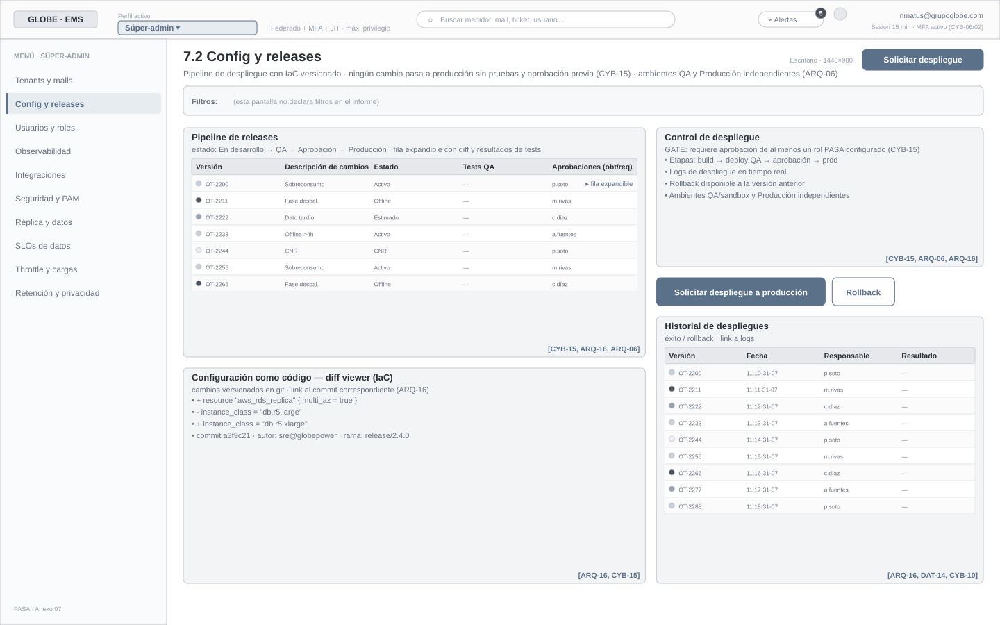
Pipeline de gestión de cambios y despliegue basado en infraestructura como código (IaC) versionada y documentada (ARQ-16). El proceso es formal: ninguna modificación pasa a producción sin pruebas de seguridad en QA y aprobación previa (CYB-15), sobre ambientes QA/sandbox y Producción independientes (ARQ-06). El botón de solicitud de despliegue abre un flujo de aprobación que exige la confirmación de al menos un rol PASA configurado.
Componentes / elementos
| Componente | Descripción | Reqs. PASA |
|---|---|---|
| Pipeline de releases | Lista de releases con versión, descripción de cambios y estado (en desarrollo / QA / aprobación / producción). Para cada release: diff de cambios, resultados de tests en QA y aprobaciones requeridas vs. obtenidas. | CYB-15, ARQ-16, ARQ-06 |
| Control de despliegue | Botón 'Solicitar despliegue a producción' que abre el flujo de aprobación (requiere aprobación de al menos un rol PASA). Estado del despliegue con etapas, logs en tiempo real y rollback disponible. | CYB-15, ARQ-06, ARQ-16 |
| Configuración como código | Diff viewer de los cambios en IaC entre versiones. Todos los cambios versionados en git, con link al commit correspondiente. | ARQ-16, CYB-15 |
| Historial de despliegues | Versión, fecha, responsable, resultado (éxito / rollback) y link a logs. | ARQ-16, DAT-14, CYB-10 |
Pipeline con estado codificado y etapas ordenadas
Cada release muestra su fase (desarrollo/QA/aprobación/producción) con un punto de estado en la primera columna, de modo que el administrador reconstruye en un barrido en qué punto del proceso está cada cambio. Ver la etapa evita que alguien intente promover algo que aún no pasó QA.
Principio: Visibilidad del estado del sistema; feedback de progreso por etapas.
'Solicitar despliegue a producción' como CTA de acento con gate explícito
El botón primario no dice 'Desplegar' sino 'Solicitar despliegue', y su meta advierte que exige aprobación de un rol PASA. El lenguaje del propio control comunica que la acción no es inmediata sino sometida a un gate, alineando la expectativa con el proceso formal de gestión de cambios.
Principio: Correspondencia entre etiqueta y consecuencia real; prevención de error en acción crítica.
Diff de IaC visible antes de aprobar
El visor de diferencias con las líneas añadidas y eliminadas y el link al commit está en pantalla para que quien aprueba lea exactamente qué cambia en la infraestructura, sin salir a la herramienta de git. Mostrar el cambio concreto convierte la aprobación en una decisión informada, no en un clic ciego.
Principio: Reconocer antes que recordar; revelar el contenido de la decisión.
Rollback como acción siempre presente
El control de rollback acompaña permanentemente al de despliegue, no aparece solo cuando algo falla, para que ante un incidente en producción la vía de reversión sea inmediata y no haya que buscarla bajo presión. Una salida de emergencia visible reduce el tiempo de recuperación.
Principio: Salidas claramente marcadas; control y libertad del usuario.
Historial de despliegues como registro auditado a la derecha
El historial con resultado (éxito/rollback) y responsable queda fijo junto al control, porque en este perfil todo despliegue es auditado por PASA y el operador necesita ver el precedente de la versión antes de repetir una operación. El registro contiguo sostiene la rendición de cuentas.
Principio: Trazabilidad en contexto; el pasado informa la próxima acción.
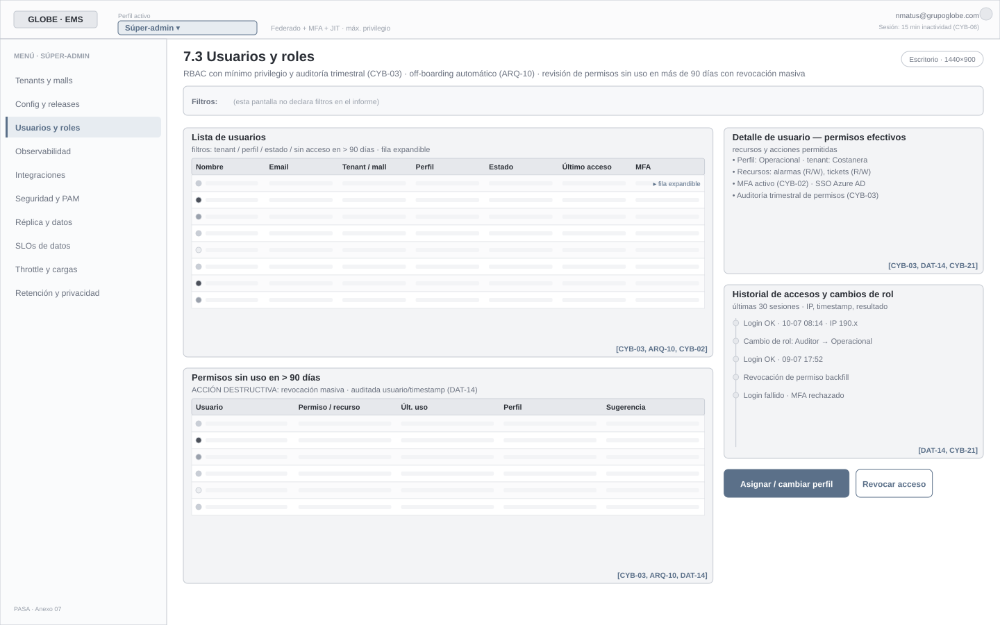
Gestión de identidades y roles bajo RBAC con mínimo privilegio y auditoría trimestral de permisos (CYB-03), integrada con el off-boarding automático desde Azure AD (ARQ-10). Además de la lista y el detalle por usuario, incorpora un panel de revisión de permisos sin uso en más de 90 días que habilita la revocación masiva, y expone los permisos efectivos y el historial de accesos y cambios de rol de cada cuenta.
Componentes / elementos
| Componente | Descripción | Reqs. PASA |
|---|---|---|
| Lista de usuarios | Nombre, email, tenant/mall asignado, perfil, estado (activo/inactivo/bloqueado), último acceso y MFA activo. Filtros por tenant, perfil, estado y sin acceso en más de 90 días. | CYB-03, ARQ-10, CYB-02 |
| Detalle de usuario | Permisos efectivos (recursos y acciones permitidas). Historial de accesos: últimas 30 sesiones. Historial de cambios de rol. | CYB-03, DAT-14, CYB-21 |
| Gestión de usuarios | Asignar/cambiar perfil con justificación. Revocar acceso (off-boarding). Revisión periódica de permisos: panel de 'permisos sin uso en más de 90 días' con revocación masiva. | CYB-03, ARQ-10, DAT-14 |
Columna de MFA y estado en la lista principal
El estado de la cuenta y si tiene MFA activo se muestran como columnas fijas, no ocultas en el detalle, porque la primera pregunta de seguridad al revisar el padrón es qué cuentas están activas sin doble factor. Exponerlo en la fila permite auditar el cumplimiento de CYB-02 sin abrir cada usuario.
Principio: Información crítica al primer nivel; escaneabilidad de la condición de riesgo.
Panel dedicado de permisos sin uso > 90 días
El mínimo privilegio se opera desde un bloque propio que aísla los permisos ociosos y ofrece revocarlos en bloque, convirtiendo la auditoría trimestral en una tarea guiada en vez de una búsqueda manual usuario por usuario. Reunir lo revocable en un solo lugar reduce el esfuerzo de mantener el principio de mínimo privilegio.
Principio: Agrupar por intención de tarea; reducir la carga de la revisión periódica.
Etiqueta explícita de acción destructiva en la revocación masiva
El bloque de revocación advierte en su meta que es una acción destructiva y auditada; antes de aplicar sobre múltiples cuentas debe mediar confirmación. Nombrar el riesgo junto al control frena la ejecución impulsiva de una operación que puede dejar sin acceso a varios usuarios a la vez.
Principio: Prevención de errores; confirmación proporcional al alcance del daño.
Cambio de perfil que exige justificación
Asignar o cambiar un rol no es un desplegable suelto: el flujo pide una justificación que quedará en la auditoría. Obligar a explicar el porqué disuade cambios arbitrarios de privilegio y deja una razón trazable para la revisión de PASA.
Principio: Fricción deliberada en acciones sensibles; responsabilidad rastreable.
Historial de accesos y cambios de rol como línea de tiempo
Las últimas sesiones y los cambios de rol se presentan en orden cronológico junto al detalle, de modo que al investigar una cuenta el administrador ve la secuencia de eventos (logins, fallos de MFA, cambios de permiso) sin reconstruirla. La narrativa temporal facilita detectar comportamientos anómalos.
Principio: Reconocimiento sobre memoria; la secuencia temporal cuenta la historia de la cuenta.
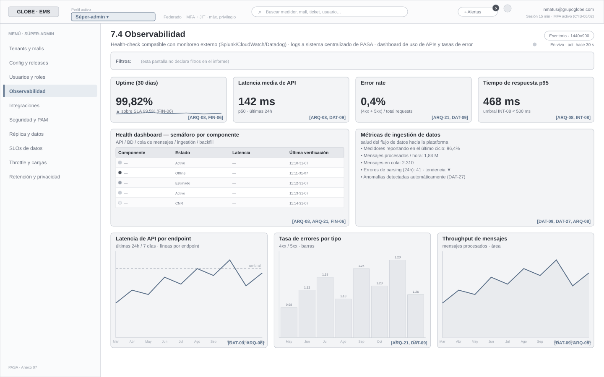
Panel de observabilidad de la plataforma con health-check compatible con herramientas de monitoreo externas (Splunk, CloudWatch, Datadog) según ARQ-08, envío de logs de errores al sistema centralizado de PASA (ARQ-21) y dashboard de uso de APIs y tasas de error (DAT-09). Combina un semáforo de salud por componente, métricas de ingestión de datos y gráficos de tendencia de latencia, errores y throughput.
Componentes / elementos
| Componente | Descripción | Reqs. PASA |
|---|---|---|
| Health dashboard | Uptime (30 días), latencia media de API [ms], error rate [%] y tiempo de respuesta p95. Semáforo por componente: API / BD / cola de mensajes / ingestión / backfill. | ARQ-08, ARQ-21, FIN-06 |
| Métricas de ingestión de datos | % de medidores reportando en el último ciclo, mensajes procesados/hora, mensajes en cola y errores de parsing. | DAT-09, DAT-27, ARQ-08 |
| Gráficos de tendencia | Latencia de API por endpoint (líneas), tasa de errores por tipo 4xx/5xx (barras) y throughput de mensajes (área). Ventanas de últimas 24h / 7 días. | DAT-09, ARQ-08, ARQ-21 |
Fila de KPIs de salud como cabecera de lectura
Uptime, latencia, error rate y p95 se alinean en una sola fila superior porque son la respuesta inmediata a '¿está sana la plataforma ahora?'. El administrador los lee como un tablero de instrumentos antes de descender al detalle, y cada uno referencia su umbral contractual para saber si el número es aceptable.
Principio: Jerarquía en F; la conclusión de salud antes que la evidencia gráfica.
Semáforo por componente en tabla de estado
API, base de datos, cola, ingestión y backfill se listan con su punto de estado y última verificación, de modo que ante una degradación el operador localiza el componente culpable de un vistazo en lugar de correlacionar gráficos. Descomponer la salud por pieza acelera el diagnóstico de causa.
Principio: Codificación pre-atenta del color; localización rápida del punto de falla.
Métricas de ingestión separadas de la salud de aplicación
El flujo de datos (medidores reportando, mensajes en cola, errores de parsing) tiene su propio panel junto al health, porque en un EMS un problema de datos no siempre coincide con uno de infraestructura. Distinguir 'la app responde' de 'los datos llegan' evita que el administrador dé por sana la plataforma cuando la ingestión está detenida.
Principio: Separación de dominios de problema; evitar conclusiones falsas por agregación.
Tres gráficos de tendencia contiguos y comparables
Latencia, errores y throughput se colocan lado a lado con el mismo eje temporal para que el administrador correlacione visualmente un pico de errores con una caída de throughput sin cambiar de vista. La alineación temporal convierte tres series en una sola lectura de causa-efecto.
Principio: Vistas coordinadas en un eje común; comparación por adyacencia.
Compatibilidad con monitoreo externo declarada en subtítulo
El encabezado recuerda que estas métricas se exponen a Splunk/Datadog y se envían a los logs centralizados de PASA, para que el administrador entienda que la pantalla es un espejo del monitoreo formal y no una fuente aislada. Situar la herramienta en su ecosistema evita duplicar la vigilancia.
Principio: Consistencia con el sistema externo; transparencia del origen del dato.
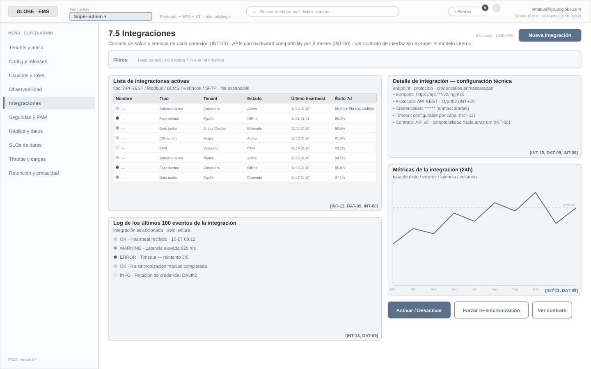
Consola de monitoreo y administración de las integraciones de la plataforma, con estado de salud y latencia de cada conexión (INT-13) y observabilidad de API (DAT-09). Permite ver el detalle técnico de cada integración con credenciales enmascaradas, gestionar su activación y forzar re-sincronización, y consultar el contrato de interfaz (versión de API y esquema) con backward compatibility por 6 meses (INT-06) sin exponer el modelo interno.
Componentes / elementos
| Componente | Descripción | Reqs. PASA |
|---|---|---|
| Lista de integraciones activas | Nombre, tipo (API REST / Modbus / DLMS / webhook / SFTP), tenant, estado (activo/degradado/error), último heartbeat y tasa de éxito de 7 días. | INT-13, DAT-09, INT-06 |
| Detalle de integración | Configuración técnica (endpoint, protocolo, credenciales enmascaradas). Métricas: tasa de éxito, errores, latencia y volumen de 24h. Log de los últimos 100 eventos. | INT-13, DAT-09, INT-06 |
| Gestión de integraciones | Activar/Desactivar con registro de motivo. Forzar re-sincronización. Ver el contrato de interfaz (versión de API, esquema) sin exponer el modelo interno. | INT-06, INT-07, DAT-25 |
Estado y tasa de éxito 7d en la lista
Cada integración muestra su estado y su tasa de éxito de la última semana como columnas, de modo que el administrador prioriza las conexiones degradadas o con error sin abrirlas una a una. Ordenar la atención hacia lo que falla es el propósito de una consola de salud de interfaces.
Principio: Priorización por severidad; lo problemático se hace evidente primero.
Credenciales enmascaradas en el detalle
Aunque este perfil tiene máximo privilegio, el detalle técnico muestra las credenciales ofuscadas por defecto; verlas en claro sería una acción aparte y auditada. Ocultar el secreto salvo solicitud explícita reduce la exposición accidental en pantalla compartida o captura.
Principio: Minimización de exposición de secretos; privilegio no implica revelación por defecto.
'Forzar re-sincronización' junto al log de eventos
La acción de re-sincronizar se ubica cerca del log de los últimos 100 eventos porque el administrador la ejecuta justo después de leer un error y quiere ver el efecto inmediato en el mismo lugar. Emparejar la acción con su evidencia cierra el ciclo diagnóstico-acción-verificación.
Principio: Proximidad acción-feedback; cerrar el bucle de control.
'Ver contrato' sin exponer el modelo interno
El botón de contrato de interfaz muestra la versión de API y el esquema público, pero no la implementación interna; la etiqueta lo deja claro para que el administrador comparta el contrato con PASA sin filtrar detalles propietarios. Delimitar qué se expone protege la frontera técnica del proveedor.
Principio: Correspondencia entre affordance y alcance permitido; protección de la frontera de datos.
Métricas como gráfico con umbral de servicio
La tasa de éxito y latencia de 24h se grafican con una línea de umbral para que el administrador vea de un vistazo si la integración opera dentro de lo comprometido, en lugar de interpretar cifras sueltas. El umbral dibujado transforma el dato en juicio inmediato de cumplimiento.
Principio: Referencia visible para la interpretación; el umbral da significado al valor.
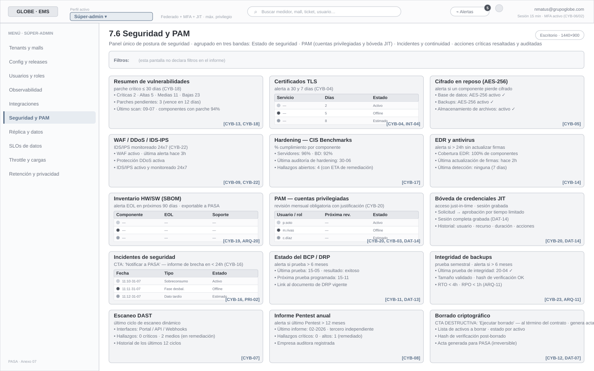
Panel único de postura de seguridad y gestión de accesos privilegiados del proveedor, agrupado en tres bandas de afinidad para reducir la carga cognitiva de una pantalla muy densa: (1) Estado de seguridad — vulnerabilidades, certificados TLS, cifrado en reposo, WAF/DDoS/IDS-IPS, hardening CIS, inventario SBOM y EDR; (2) PAM — cuentas privilegiadas y bóveda de credenciales JIT; (3) Incidentes y continuidad — incidentes de seguridad con notificación de brechas en menos de 24h, BCP/DRP, integridad de backups, DAST, Pentest anual y borrado criptográfico. Las acciones críticas y destructivas se resaltan y quedan auditadas.
Componentes / elementos
| Componente | Descripción | Reqs. PASA |
|---|---|---|
| Resumen de vulnerabilidades | Vulnerabilidades abiertas por severidad (crítica/alta/media/baja), parches pendientes con fecha límite (críticas ≤ 30 días), fecha del último scan y % de componentes con parche vigente. | CYB-13, CYB-18 |
| Certificados TLS | Tabla de certificados por servicio: dominio, fecha de expiración, días restantes y estado (válido/por vencer/vencido). Alerta automática a 30 y 7 días del vencimiento. | CYB-04, INT-04 |
| Estado de cifrado en reposo | Indicador por componente (base de datos, backups, almacenamiento de archivos): cifrado AES-256 activo (sí/no), última verificación y responsable. Alerta si algún componente pierde el cifrado. | CYB-05 |
| Estado de WAF / DDoS / IDS-IPS | Semáforo por servicio de protección perimetral: WAF activo, protección DDoS activa, IDS/IPS activo y monitoreado 24x7. Última alerta detectada por cada sistema. | CYB-09, CYB-22 |
| Hardening — cumplimiento CIS Benchmarks | % de cumplimiento del benchmark CIS por componente (servidor, BD). Última auditoría de hardening. Hallazgos abiertos con criticidad y ETA de remediación. | CYB-17 |
| Inventario de componentes HW/SW (SBOM) | Tabla de todos los componentes tecnológicos: nombre, versión, fabricante, fecha de EOL y estado de soporte. Exportable a PASA. Alerta si algún componente entra en EOL en los próximos 90 días. | CYB-19, ARQ-20 |
| EDR y antivirus | Estado de cobertura de EDR por componente: activo/inactivo, fecha de última actualización de firmas y última detección. Alerta si algún componente lleva más de 24h sin actualización. | CYB-14 |
| Lista de cuentas privilegiadas (PAM) | Usuario, rol, fecha de última revisión, próxima revisión programada y estado (activo/suspendido/en revisión). Revisión mensual obligatoria con registro de justificación de uso. | CYB-20, CYB-03, DAT-14 |
| Bóveda de credenciales JIT | Acceso just-in-time: el técnico solicita acceso, se aprueba por tiempo limitado y se graba la sesión completa. Historial de uso: usuario, recurso accedido, duración y acciones realizadas. | CYB-20, DAT-14 |
| Lista de incidentes de seguridad | Incidentes abiertos: fecha de detección, tipo, severidad, estado y responsable. Botón 'Notificar a PASA' que genera y envía el informe de brecha en formato estándar en menos de 24h desde la detección. | CYB-16, PRI-02 |
| Estado del BCP / DRP | Última prueba realizada, resultado (exitoso/con observaciones), próxima prueba programada y link al documento de DRP vigente. Alerta si la prueba lleva más de 6 meses sin realizarse. | CYB-11, DAT-13 |
| Integridad de backups | Registro de pruebas de integridad de backups (semestral mínimo): fecha, resultado, tamaño validado y hash de verificación. Alerta si el último backup validado tiene más de 6 meses. | CYB-23, ARQ-11 |
| Escaneo DAST | Resultado del último ciclo de escaneo dinámico: fecha, interfaces escaneadas (Portal/API/Webhooks), hallazgos por severidad y estado de remediación. Historial de los últimos 12 ciclos. | CYB-07 |
| Informe Pentest anual | Registro del último informe de Pentest/Ethical Hacking por tercero: fecha, empresa auditora, hallazgos críticos y estado de remediación. Alerta si el último Pentest tiene más de 12 meses. | CYB-08 |
| Borrado criptográfico | Herramienta de borrado criptográfico al término del contrato: lista de activos a borrar, estado, hash de verificación post-borrado y acta generada. | CYB-12, DAT-07 |
Tres bandas de afinidad en una grilla densa uniforme
Los quince sub-paneles se organizan en bandas horizontales — estado de seguridad, PAM y continuidad — con bloques de igual altura y ancho, de modo que el administrador escanea cada dominio como una unidad en vez de enfrentar una nube de indicadores. Agrupar por afinidad y estandarizar el tamaño convierte una pantalla saturada en algo recorrible.
Principio: Agrupación por afinidad y ley de proximidad (Gestalt); reducción de carga cognitiva en alta densidad.
Semáforo homogéneo como lenguaje común de toda la pantalla
Cada panel expone su condición con el mismo código de estado, para que el ojo detecte el único bloque en rojo entre catorce en verde sin leer texto. En un tablero de seguridad con tantos frentes, un lenguaje visual único es lo que permite encontrar el problema en segundos.
Principio: Consistencia de codificación; detección pre-atenta de la excepción.
'Notificar a PASA' resaltado en el bloque de incidentes
La acción que dispara el informe de brecha en menos de 24h se destaca en el panel de incidentes con su plazo explícito, porque es la obligación contractual más sensible al tiempo de todo el perfil. Anclar la acción a su ventana de 24h evita que el operador subestime la urgencia regulatoria.
Principio: Visibilidad de la acción crítica; el plazo forma parte del control.
'Ejecutar borrado' marcado como destructivo e irreversible
El borrado criptográfico advierte en su meta que es una acción destructiva que genera un acta y no tiene retorno; su ejecución exige aprobación y confirmación. Rotular la irreversibilidad junto al botón es la última barrera contra un borrado accidental de datos al cierre de contrato.
Principio: Prevención de errores catastróficos; confirmación explícita ante acción irreversible.
Alertas de caducidad temporal embebidas en cada panel
Certificados TLS, Pentest, BCP/DRP e integridad de backups muestran su cuenta regresiva o su umbral de antigüedad dentro del propio bloque, para que el administrador vea qué control está por vencer sin abrir cada módulo. Situar el vencimiento junto al estado transforma la vigilancia en una lectura pasiva.
Principio: Visibilidad del estado del sistema; anticipación en vez de reacción.
Bóveda JIT y PAM contiguos como flujo de acceso privilegiado
La lista de cuentas privilegiadas y la bóveda de acceso just-in-time se colocan juntas porque describen el mismo ciclo: quién tiene privilegio permanente y cómo se concede el temporal con sesión grabada. Reunir ambos evita que el administrador razone el control de accesos privilegiados en dos lugares distintos.
Principio: Continuidad del modelo mental; agrupar los pasos de un mismo proceso.
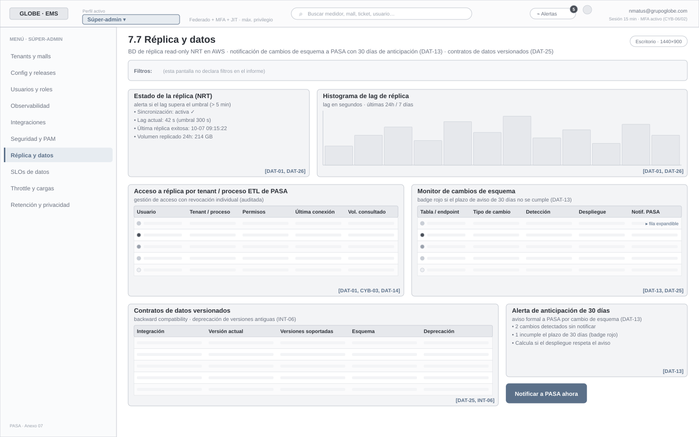
Gestión de la base de datos de réplica read-only en AWS con sincronización NRT (DAT-01) y de los contratos de datos versionados que PASA consume en sus procesos ETL (DAT-25). Incluye el estado y el lag de la réplica, el control de acceso por tenant/proceso, el monitor de cambios de esquema con el cálculo del aviso de 30 días de anticipación a PASA (DAT-13) y el catálogo de contratos con su política de compatibilidad hacia atrás (INT-06).
Componentes / elementos
| Componente | Descripción | Reqs. PASA |
|---|---|---|
| Panel de estado de réplica | Estado de sincronización NRT (activa/degradada/detenida), lag actual [segundos], timestamp de la última réplica exitosa y volumen replicado en 24h. Alerta si el lag supera el umbral configurado. | DAT-01, DAT-26 |
| Histograma de lag de réplica | Gráfico del lag en segundos durante las últimas 24h/7 días. Permite identificar degradaciones periódicas o picos de carga que afectan la sincronización. | DAT-01, DAT-26 |
| Acceso a réplica por tenant | Tabla de credenciales de acceso a la réplica read-only por tenant/proceso ETL de PASA: usuario, permisos, última conexión y volumen consultado. Gestión de acceso con revocación individual. | DAT-01, CYB-03, DAT-14 |
| Monitor de cambios de esquema | Detecta automáticamente cambios en la estructura de tablas de la réplica o la API. Lista los cambios pendientes de notificar a PASA con tabla/endpoint afectado, tipo de cambio, fecha de detección, fecha planificada de despliegue y estado de notificación (pendiente/enviada/confirmada). | DAT-13, DAT-25 |
| Alerta de anticipación de 30 días | Para cada cambio de esquema detectado calcula si el despliegue planificado respeta el aviso de 30 días a PASA. Badge rojo si el plazo no se cumple. Botón 'Notificar a PASA ahora' que genera el aviso formal. | DAT-13 |
| Contratos de datos versionados | Catálogo de contratos activos: nombre de la integración (API/réplica/webhook/archivo), versión actual, versiones anteriores soportadas, esquema (campos, tipos, validaciones), política de compatibilidad hacia atrás y fecha de deprecación de versiones antiguas. | DAT-25, INT-06 |
Estado de réplica y lag emparejados con su histograma
El indicador de lag actual se coloca junto al histograma de su evolución para que el administrador distinga un pico puntual de una degradación sostenida en la misma mirada. Un número solo no dice si el problema es transitorio; la serie contigua le da esa lectura.
Principio: Dato puntual junto a su tendencia; contexto para interpretar el valor.
Cálculo automático del plazo de 30 días con badge
El sistema no deja al administrador contar días: calcula si el despliegue de cada cambio de esquema respeta el aviso de 30 días a PASA y marca en rojo el que lo incumple. Automatizar el cómputo del plazo previene el error de notificar tarde una obligación contractual.
Principio: Prevención de errores por cálculo manual; el sistema vigila el compromiso.
Botón 'Notificar a PASA ahora' contiguo a la alerta
La acción de emitir el aviso formal se ubica junto al panel que detecta el incumplimiento del plazo, para que la respuesta al riesgo sea inmediata y en el mismo lugar donde se descubre. Acercar la solución al problema reduce la latencia entre detectar y actuar.
Principio: Proximidad problema-acción; minimizar el costo de la respuesta correcta.
Acceso a la réplica con revocación individual auditada
La tabla de accesos por tenant/proceso ETL permite revocar credenciales una a una en lugar de en bloque, porque cortar el acceso ETL de PASA de forma masiva interrumpiría procesos legítimos. La granularidad de la revocación protege la operación del cliente mientras se mantiene el control.
Principio: Control de grano fino en operaciones sensibles; evitar el daño colateral.
Contratos versionados como catálogo con deprecación visible
El catálogo muestra versión actual, versiones aún soportadas y fecha de deprecación en columnas, de modo que el administrador comunica a PASA hasta cuándo funciona cada versión sin abrir documentación externa. Exponer el calendario de compatibilidad hace explícito el compromiso de backward compatibility.
Principio: Transparencia del ciclo de vida; el compromiso de compatibilidad a la vista.
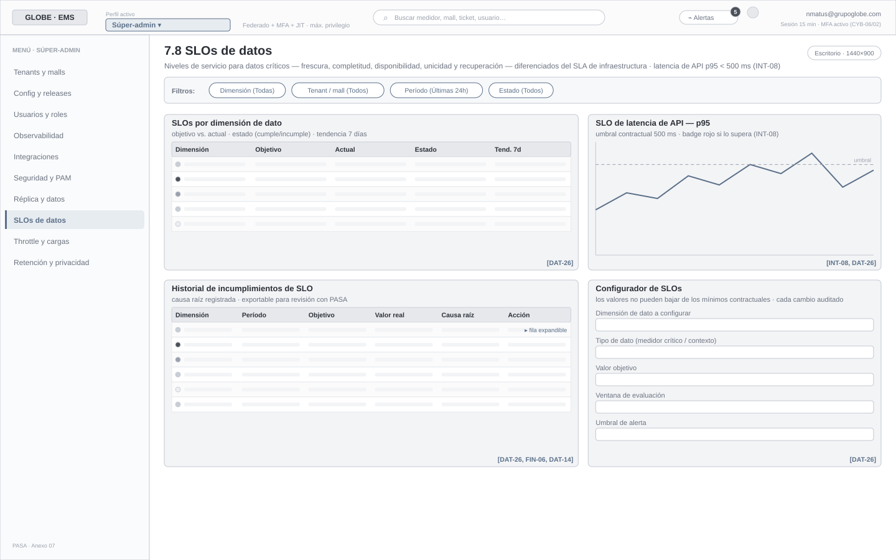
Panel diferenciado de niveles de servicio (SLOs) para datos críticos, separado del SLA de infraestructura y aplicación. La plataforma compromete SLOs específicos para frescura, completitud, disponibilidad, unicidad operativa y tiempo máximo de recuperación de datasets (DAT-26), más un indicador dedicado de latencia de API en el percentil 95 con umbral contractual de 500 ms (INT-08). Incluye historial de incumplimientos exportable y un configurador que no permite bajar de los mínimos contractuales.
Componentes / elementos
| Componente | Descripción | Reqs. PASA |
|---|---|---|
| Tabla de SLOs por dimensión de dato | Una fila por dimensión: Frescura [min desde última lectura], Completitud [% recibidas vs. esperadas], Disponibilidad de datos [%], Unicidad operativa [% sin duplicados] y Tiempo de recuperación de dataset [min]. Para cada una: valor objetivo, valor actual, estado (cumple/incumple) y tendencia 7 días. | DAT-26 |
| SLO de latencia de API (p95 < 500 ms) | Indicador del percentil 95 del tiempo de respuesta de la API de datos. Umbral contractual 500 ms. Valor actual en tiempo real y gráfico de evolución del p95 en los últimos 7 días. Badge rojo si supera el umbral. | INT-08, DAT-26 |
| Historial de incumplimientos de SLO | Tabla de períodos en que algún SLO fue incumplido: dimensión afectada, período, valor objetivo, valor real, causa raíz registrada y acción tomada. Exportable para revisión con PASA. | DAT-26, FIN-06, DAT-14 |
| Configurador de SLOs | Permite ajustar los valores objetivo por SLO y por tipo de dato (datos de medidores críticos vs. datos de contexto). Cada cambio queda registrado con usuario y timestamp. Los valores no pueden bajar de los mínimos contractuales. | DAT-26 |
Filtros disponibles
| Filtro | Opciones | Por defecto |
|---|---|---|
| Dimensión | Frescura / Completitud / Disponibilidad / Unicidad / Tiempo de recuperación / Latencia API / Todas | Todas |
| Tenant / mall | Multi-selección con buscador | Todos |
| Período | Tiempo real / Últimas 24h / 7 días / 30 días | Últimas 24h |
| Estado | Todos / Solo incumplidos / Solo en riesgo | Todos |
Tabla de SLOs con objetivo y actual en columnas contiguas
Cada dimensión muestra su valor objetivo junto al valor actual y el estado, de modo que el administrador juzga el cumplimiento comparando dos cifras adyacentes en vez de recordar el umbral. Poner el compromiso al lado del dato real elimina el paso mental de buscar contra qué se mide.
Principio: Comparación en contexto; reducir la carga de memoria del umbral.
SLO de latencia p95 con línea de umbral dibujada
El gráfico del p95 traza la línea de 500 ms para que cualquier punto por encima sea visible sin leer valores, y el badge rojo confirma el incumplimiento. Materializar el umbral contractual sobre la serie convierte el SLO en una lectura binaria de cumple/no cumple.
Principio: Umbral visible sobre la serie; juicio inmediato de cumplimiento.
Configurador que bloquea bajar del mínimo contractual
El formulario de ajuste de objetivos impide fijar un valor por debajo del piso pactado con PASA; el propio control es la barrera. Restringir el rango editable previene que, con máximo privilegio, se relaje un compromiso contractual por error o descuido.
Principio: Prevención de errores por restricción del rango; el límite vive en el control.
Historial de incumplimientos con causa raíz y exportable
Cada incumplimiento registra su causa raíz y acción tomada y es exportable, porque la conversación con PASA no es sobre el número aislado sino sobre por qué ocurrió y qué se hizo. Estructurar la evidencia para la revisión externa hace la rendición de cuentas verificable.
Principio: Trazabilidad orientada a la auditoría externa; el dato acompañado de su explicación.
Filtros declarados por dimensión, tenant, período y estado
Esta pantalla sí expone filtros porque el administrador alterna entre revisar una dimensión concreta, un tenant o solo lo incumplido; ubicarlos en la barra superior estándar mantiene el patrón del resto del perfil y evita reconstruir la vista manualmente. La consistencia del lugar del filtro reduce el costo de aprenderlo.
Principio: Consistencia entre pantallas; filtrado como reducción del espacio de búsqueda.
Datos críticos separados del SLA de infraestructura
El subtítulo insiste en que estos SLOs son distintos del uptime de infraestructura, para que el administrador no confunda 'la plataforma está arriba' con 'los datos son frescos y completos'. Diferenciar los dominios de servicio evita dar por cumplido un compromiso de datos mirando la salud del sistema.
Principio: Distinción explícita de dominios; evitar la confusión entre disponibilidad y calidad de dato.
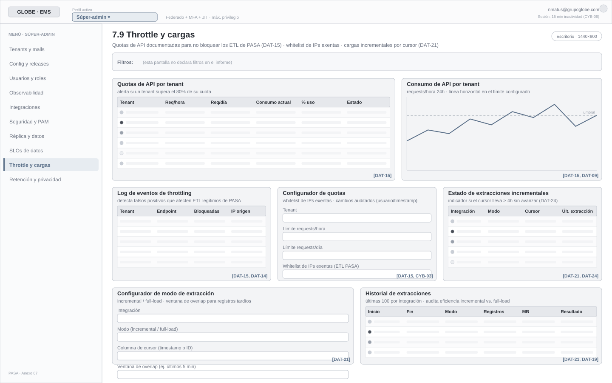
Gestión de los límites de consumo de la API (throttle y quotas) y de la configuración de las extracciones incrementales por tenant. Los quotas están definidos y documentados para que los procesos ETL de PASA no sean bloqueados por rate limiting ni incurran en sobrecostos (DAT-15), con whitelist de IPs exentas y log de eventos para detectar falsos positivos. La sección de cargas soporta el modo incremental por cursor (DAT-21) con ventana de overlap para registros tardíos.
Componentes / elementos
| Componente | Descripción | Reqs. PASA |
|---|---|---|
| Tabla de quotas por tenant | Tenant, límite de requests/hora y /día, consumo actual (requests en la última hora y en el día), % de uso sobre la cuota y estado (normal/en riesgo/bloqueado). Alerta si algún tenant supera el 80% de su cuota. | DAT-15 |
| Gráfico de consumo de API por tenant | Línea de requests/hora en las últimas 24h por tenant seleccionado, con línea horizontal en el límite configurado. Permite identificar picos que podrían activar el rate limiting. | DAT-15, DAT-09 |
| Configurador de quotas | Editar el límite de requests/hora y /día por tenant. Campo de whitelist de IPs exentas de rate limiting (para procesos ETL de PASA). Registro de cambios con usuario y timestamp. | DAT-15, CYB-03 |
| Log de eventos de throttling | Registro de cada activación del rate limiting: tenant, endpoint, timestamp, nº de requests bloqueadas e IP de origen. Exportable. Permite detectar falsos positivos que afecten procesos ETL legítimos de PASA. | DAT-15, DAT-14 |
| Estado de extracciones incrementales por integración | Integración, tipo (API/réplica/webhook), modo (incremental/full-load), cursor actual (última marca de tiempo o ID extraído), última extracción exitosa y nº de registros. Indicador si el cursor lleva más de 4h sin avanzar. | DAT-21, DAT-24 |
| Configurador de modo de extracción | Por integración: selector de modo (incremental / full-load). Para modo incremental: campo de cursor (columna de timestamp o ID incremental) y configuración de ventana de overlap (ej. últimos 5 min para cubrir registros tardíos). | DAT-21 |
| Historial de extracciones | Log de las últimas 100 extracciones por integración: timestamp de inicio y fin, modo, nº de registros, tamaño [MB] y resultado (éxito/error/parcial). Permite auditar la eficiencia del modo incremental vs. full-load. | DAT-21, DAT-19 |
% de uso y estado por tenant como semáforo de riesgo
La tabla de quotas resalta el porcentaje de uso y marca 'en riesgo' al superar el 80%, para que el administrador intervenga antes de que un tenant crítico de PASA choque contra el rate limiting. Anticipar el bloqueo con un umbral de advertencia protege la continuidad de los ETL del cliente.
Principio: Alerta temprana; actuar antes del fallo, no después.
Gráfico de consumo con la línea del límite superpuesta
El consumo por hora se dibuja contra la línea del límite configurado, de modo que un pico que se acerca al techo se ve venir. Mostrar el margen restante convierte una serie de tráfico en una herramienta de decisión sobre si ampliar la cuota.
Principio: Umbral visible como referencia de decisión; margen a la vista.
Whitelist de IPs de PASA en el configurador de quotas
El configurador incluye un campo explícito de IPs exentas para los ETL de PASA, porque el objetivo del throttle no es frenar al cliente sino a los abusos externos. Hacer de la exención un control de primera clase evita que un límite genérico bloquee por error los procesos legítimos.
Principio: El diseño refleja la intención real de la política; excepción legítima como control explícito.
Log de throttling orientado a detectar falsos positivos
El registro de bloqueos incluye endpoint e IP de origen para que el administrador distinga un ataque de un ETL legítimo mal calibrado. Estructurar el log en torno a esa pregunta hace que la evidencia sirva para corregir la quota, no solo para constatar el bloqueo.
Principio: Datos orientados a la acción de corrección; el log responde una pregunta concreta.
Cargas incrementales con indicador de cursor detenido
El estado de extracciones marca cuándo un cursor lleva más de 4h sin avanzar, señal de que la carga incremental se estancó y PASA podría estar recibiendo datos incompletos. Vigilar el avance del cursor detecta un silencio de datos que un simple 'sin errores' ocultaría.
Principio: Detección de fallo silencioso; ausencia de progreso como señal de alarma.
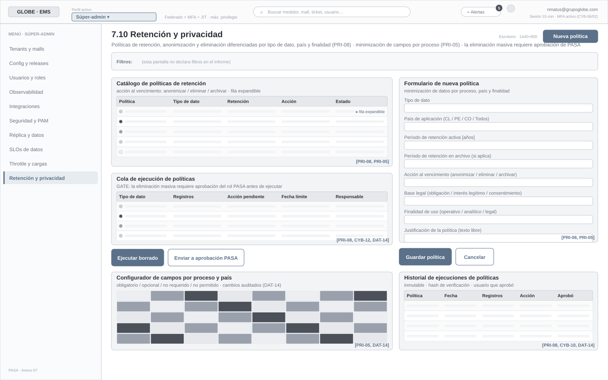
Configuración y ejecución de políticas de retención, anonimización y eliminación diferenciadas por tipo de dato, obligación legal, país, criticidad y finalidad de uso (PRI-08), junto con la minimización de datos que define qué campos son obligatorios, opcionales, no requeridos o no permitidos según proceso y país (PRI-05). La cola de ejecución exige aprobación del rol PASA antes de una eliminación masiva, y toda ejecución queda registrada de forma inmutable con hash de verificación.
Componentes / elementos
| Componente | Descripción | Reqs. PASA |
|---|---|---|
| Catálogo de políticas de retención | Tabla de políticas activas: nombre, tipo de dato (consumo eléctrico / dato de locatario / log de auditoría / dato personal / dato de configuración), país de aplicación, período de retención activa [años], acción al vencimiento (anonimizar/eliminar/archivar), base legal y estado (activa/pendiente/vencida). | PRI-08, PRI-05 |
| Formulario de nueva política | Tipo de dato, país de aplicación (Chile), período de retención activa, período de retención en archivo, acción al vencimiento, base legal (obligación legal / interés legítimo / consentimiento), finalidad de uso (operativo / analítico / legal) y justificación de la política. | PRI-08, PRI-05 |
| Cola de ejecución de políticas | Lista de políticas cuya fecha de vencimiento se acerca o ya se cumplió: tipo de dato, nº de registros afectados, acción pendiente (anonimizar/eliminar/archivar), fecha límite y responsable. Requiere aprobación del rol PASA antes de ejecutar una eliminación masiva. | PRI-08, CYB-12, DAT-14 |
| Configurador de campos por proceso y país | Matriz de campos por proceso (ingesta de medidor / integración con locatario / exportación a Data Lake / etc.) y por país. Para cada celda: campo obligatorio / opcional / no requerido / no permitido. Los cambios requieren justificación y quedan en la pista de auditoría. | PRI-05, DAT-14 |
| Historial de ejecuciones de políticas | Log de cada ejecución: política, fecha, nº de registros procesados, acción ejecutada (anonimización/eliminación/archivo), hash de verificación y usuario que aprobó. Inmutable. | PRI-08, CYB-10, DAT-14 |
Catálogo a la izquierda y alta de política a la derecha
El flujo natural es revisar qué políticas existen antes de crear una nueva, así que el catálogo ocupa el punto de entrada y el formulario de alta se sitúa a su derecha como paso siguiente. Ordenar 'consultar' antes de 'crear' evita duplicar políticas y refuerza el recorrido de lectura de izquierda a derecha.
Principio: Flujo alineado al recorrido de lectura; consultar antes de crear.
Cola de ejecución con gate de aprobación PASA visible
Las políticas por vencer se listan con el número de registros afectados, y su meta advierte que una eliminación masiva exige aprobación del rol PASA antes de ejecutarse. Mostrar el alcance del borrado junto al gate frena la ejecución de una acción irreversible sin la autorización debida.
Principio: Prevención de errores irreversibles; el alcance del daño y el gate a la vista.
'Ejecutar borrado' y 'Enviar a aprobación' diferenciados
Los dos botones de la cola separan la acción destructiva de la de solicitar autorización, de modo que el administrador no confunda ejecutar con tramitar. Distinguir la acción final de su antesala reduce el riesgo de disparar una eliminación creyendo que solo se pedía permiso.
Principio: Jerarquía y separación de acciones; distinguir el trámite de la ejecución.
Configurador de campos como matriz proceso × país
La minimización de datos se opera en una matriz donde cada celda cruza un proceso con un país y marca si el campo es obligatorio, opcional, no requerido o no permitido; ver la rejilla completa permite detectar un dato exigido donde debería estar prohibido. La representación matricial hace visibles las inconsistencias de política entre países.
Principio: Visualización matricial para detectar excepciones; la estructura revela el error.
Historial de ejecuciones inmutable con quién aprobó
Cada ejecución guarda el hash de verificación y el usuario que la aprobó, sin posibilidad de edición, porque la eliminación o anonimización de datos personales debe poder demostrarse ante PASA y ante la autoridad. Registrar la aprobación junto al resultado convierte la acción en evidencia de cumplimiento.
Principio: Inmutabilidad y trazabilidad de aprobación; la ejecución como prueba legal.
País y base legal como campos obligatorios de la política
El formulario de alta exige país, base legal y finalidad antes de guardar, porque una misma clase de dato retiene distinto según jurisdicción y motivo. Forzar estos campos impide crear una política ambigua que luego se aplique mal según la jurisdicción o la finalidad.
Principio: Restricciones que garantizan una política completa; prevención de configuración incompleta.